Economy · Local Economic Assessment
Interim Local Economic Assessment 2026
Download the Word versionThis is a complete interim version of the 2026 Local Economic Assessment. This edition aims to refresh the indicators used in the original LEA to the latest versions available as of August 2026. The versions of key data sets used in this document are available in the data edition table found in the data annex.
It is issued as an interim because several major releases land between this version and the end of the year. Shifting the publication date of the LEA to the end of the year allows us to better capture newly released data. The December 2026 edition, which will contain these releases, will be the definitive edition of this assessment.
Executive summary
The evidence suggests that the largest constraint on Gateshead's economy is the value of its work. Participation sits close to national levels but output per hour does not. This finding should help inform economic strategy. Overall, the data does not show that Gateshead’s local economy has changed much in the last year since the 2025 local economic assessment.
The value the economy generates is low. Gateshead's productivity, measured as gross value added per hour worked, sits at an index of 76.8 against a UK average of 100 in 2023. This is 256th of 296 English authorities and 12th of the 15 areas ONS deems most similar. Total output was approximately £5.0bn in 2023 at current prices, an all-time high, but in real terms the picture is weaker. On the chained-volume measure, which values each year's output at a common set of prices, output was £4,655m in 2023 and remains 5.8% below its 2019 level of £4,939m. The £5bn at current prices reflects inflation as much as volume.
Raising participation cannot close a gap of this size. Taking the working-age population growth projected to 2043 and closing the entire employment-rate gap to England, which are deliberately generous assumptions, would add approximately 9,400 more residents into work, equating to roughly £469m of output. Reaching the UK average for output per hour on the existing job base would add around £1,522m. The case for raising participation rests on household income and on what work does for the people who gain it.
Participation has been strong, but recent figures are unsettled. Employment and activity rates ran above the regional average and close to England through 2023 and 2024. The Jan–Dec 2025 survey year showed employment falling to 70.2%, but the confidence interval is ±4.3pp and the following window (Apr 2025 to Mar 2026) recovers to 72.4% (±4.2pp). On these margins the year-on-year fall is not statistically established. Gateshead is not distinguishable from the North East or most of its statistical neighbours on either window, and is significantly below England on the calendar year. The administrative data does not settle it either. The claimant count stood at 5,035 in July 2026, approximately 4.0% of residents aged 16–64, and on same-month comparisons the picture has levelled off. The survey cannot yet tell us whether participation has fallen.
Income is where Gateshead's disadvantage is most apparent. Gross disposable household income stood at £19,745 per head in 2024. This is 274th of 296 English authorities, and level with the bottom of Gateshead's statistical neighbours (£6 above the lowest, which is not a real distinction). The gap to the England median did not close, at 21.9% below in 2023 and 22.1% in 2024. This sits alongside the fact that workplace wages sit closer to the national average while resident pay sits closer to the bottom (179th of 295 and 249th of 294 respectively) although, the two sit within survey margins of each other.
Skills restrict the ceiling. Around 36.6% of working-age residents hold a Level 4+ qualification (±4.6pp), against 38.5% across the North East and 48.0% in England. The skills gap matters for what Gateshead residents earn rather than for what the borough produces and the pipeline beneath it is stronger than the stock. For NEET, two measures are published. On NEET alone, 4.3% of Gateshead’s 16-17 year olds were not in education, employment or training in 2026, against 3.4% nationally. Authorities differ widely in how well they track their young people, and one that loses track records them as “activity not known” rather than NEET, which flatters its NEET rate. The fair comparison adds the two together. On that combined measure Gateshead is at 4.8% against England’s 5.8%, ranking 77th of the 152 authorities with education responsibilities. The borough reaches that position with a not-known rate of 0.6% against 2.4% nationally, so it genuinely knows where its young people are. Apprenticeship achievements have also risen from 690 in 2020/21 to 880 in 2024/25, in line with regional and national benchmarks.
The gap appears to be structural. Internal regression analysis finds industrial composition to be the factor most strongly associated with local productivity, and the share of knowledge-intensive business services and manufacturing above all. After accounting for each area's fixed characteristics, measured factors explain almost none of Gateshead's shortfall against its statistical neighbours. The borough has real sectoral strength, with advanced manufacturing employment more than double the national concentration within IS8 sectors and digital technology growing strongly from a low base. However, it is underrepresented in professional, scientific and financial services, which is where output per hour is highest. Sector composition alone cannot explain Gateshead’s position though. Changing our industry makeup to match that of England would only close a small portion of the productivity gap at current output per job estimates. This implies that the main challenge lies within the performance of the sectors already present.
The jobs shortfall sits in local performance rather than in the sectors the borough holds. Employee jobs across the seven Mayoral Strategic Authority areas rose by approximately 45,000 over the decade to 2024, while Gateshead's own count was flat, taking its share of regional employment from 12.1% to 11.3%. Had Gateshead’s employment grown at the same rate as England, we’d have expected to see growth of almost 10,000 employees. As Gateshead is more represented in slower growing industries, industry mix accounts for a loss of around 1,500 of those jobs. The other 8,400 is the local component, being the amount by which Gateshead's own sectors underperformed the same sectors nationally.
A place-specific gap is not a fixed one. Across 289 English authorities and fourteen years, no authority meaningfully changed the characteristics our model prices, so the model's variables should not be read as levers. The factors the model rewards most are the ones a place can least change. A minority of authorities changed their trajectory anyway, and some started in a similar position to Gateshead. Calderdale, which ONS classes among Gateshead's statistically similar authorities, moved from an index of 78.3 in 2008 to 90.4 in 2021 while Gateshead fell from 85.3 to 78.5. Although Calderdale has since declined again to 83.3 in 2023, it could still serve as a good example of how place-specific change can happen. Whatever those authorities did sits in the residual, which is what the model cannot see. Understanding how Calderdale turned its position could help inform Gateshead’s future strategy.
The evidence can help direct business support. Ranking sectors by the value of output per job shows that Gateshead has been adding jobs fastest in one of its lowest-value sectors. Transport and storage employs approximately 7,760 people in 2024 at around £28,800 of output per job (2023 calculation), against a borough average of approximately £48,778, and it grew 63.0% between 2015 and 2024. That reconciles the borough adding work without adding value.
Place inequality is widening in relative terms. The share of Gateshead neighbourhoods among England's most deprived 10% rose from 16.7% to 19.0% in IMD2025. As the index measures relative position within each release, this could mean other places improved faster rather than that Gateshead deteriorated, but the practical consequence for residents is the same.
What follows from this
- Improve productivity
- Raise household income
- Support participation for inclusion rather than growth
Closing the productivity gap is worth just over three times more than adding 9,400 jobs would be. Reaching the UK average for output per hour on the existing job base would add approximately £1,522m of output. Closing the entire employment-rate gap to England, on deliberately generous assumptions, would add approximately £469m. That points at raising the value of the work the borough already hosts. The case for raising participation rests on household income and on what work does for the people who gain it, which is a valid but different argument.
Three cautions apply throughout this assessment. Survey estimates for a single authority carry wide margins, and year-to-year movements can therefore sometimes be unclear. Deprivation indices measure relative standing and cannot be compared across releases. Some analysis has also been conducted through panel regression, and the productivity evidence from this is associational, meaning it identifies what moves together with output rather than what causes it.
Gateshead Figures
Table 1: Gateshead Figures
Indicator | Gateshead | North East | England | Rank | Direction | Edition | |
GVA per hour worked | £32.16/hr | £34.49/hr (NE median) | £38.21/hr (England median) | 256 of 296 | Gap not closing | 2023 | |
GVA per filled job | £49,663 | £55,380 (NEMSA median) | £59,130 (England median) | 262 of 296 | Up 22.3% since 2015, gap not closing | 2023 | |
Total GVA, current prices | £5.039bn | £68.9bn | £2,113bn | N/A | Series high, but 5.8% below 2019 in real terms | 2023 | |
Employment rate, 16–64 | 72.4% (±4.2pp) | 72.4% (NEMSA median) | 75.8% | N/A | Weakened on the calendar year, partly recovered on this window | Apr 2025-Mar 2026 | |
Economic inactivity rate, 16–64 | 22.4% (±3.9pp) | 24.5% (NEMSA median) | 20.5% | N/A | Below the North East median, above England, within survey margins | Apr 2025-Mar 2026 | |
Long-term sick, share of inactive | 33.0% (±9.5pp) | 33.5% (NE) | 28.0% | N/A | Slowly increasing since 2015, movement not statistically established | Apr 2025-Mar 2026 | |
Claimant count | 5,035 (4.0%) | 3.8% (NEMSA median) | 4.0% | N/A | Largely unchanged | July 2026 | |
Gross disposable household income per head | £19,745 | £20,171 (NE median) | £25,332 (England median) | 274 of 296 | Gap widened from 21.9% to 22.1% | 2024 | |
Median weekly resident pay | £578.80 | £577.85 (NE median) | £648.40 | 249 of 294 | Up 49% since 2014 | 2025 | |
Median weekly workplace pay | £590.10 | £563.80 (NE median) | £649.80 | 179 of 295 | Above resident pay in 2025, having been below it | 2025 | |
Indicator | Gateshead | North East | England | Rank | Direction | Edition | |
Residents aged 16–64 with RQF4+ | 36.6% (±4.6pp) | 36.6% (NEMSA median) | 48.0% | N/A | Persistent gap to England | Jan–Dec 2025 | |
Employee jobs | 95,000 | 840,000 (NEMSA total) | 27,634,000 | N/A | Flat, compared to +5.7% across NEMSA and +10.3% in England | 2024 | |
Share of NEMSA employee jobs | 11.3% | N/A | N/A | N/A | Down from 12.1% in 2015 | 2024 | |
Registered enterprises | 5,580 | 55,170 (NEMSA total) | 2,376,615 | N/A | Largely unchanged in recent years | 2025 | |
Business birth rate | 11.4% | 11.8% (NE) | 11.2% | 97 of 296 | Upper half nationally | 2024 | |
Five-year business survival rate | 41.3% | 38.9% (NE) | 38.3% | N/A | Above England 2019 cohort | 2024 | |
Neighbourhoods in England’s most deprived 10% | 19.0% | 21.5% (NE) | 10% | N/A | Up from 16.7% on relative position | IMD2025 | |
16–17 year olds NEET or activity not known | 4.8% | 7.2% | 5.8% | 77 of 152 | Better than England with an unusually low not-known rate | 2026 | |
1. Introducing the Local Economic Assessment
This assessment aims to provide the evidence base for Economic Development Strategy. It refreshes each indicator to the latest release available, records the source and period behind the key figures in a single table, and states what the evidence cannot answer. The analysis looks at businesses and output, the people available to work and the work available to them, as well as infrastructure and place.
1.1 Context of the LEA
Gateshead sits at the centre of the North East Mayoral Strategic Authority (NEMSA) area and has an opportunity to play a key role in the region's growth. This 2026 Local Economic Assessment (LEA) refreshes the 2025 edition, updating the evidence base to the latest available data (2024/2025) to inform public and private sector policy and investment decisions.
The North East Local Growth Plan sets a framework for inclusive, productive and sustainable growth, structured around five missions. These are focussed on growing a vibrant economy, green energy, global trade, opportunity and pride. It also recognises the importance of the foundational economy. At local level, Gateshead Council's strategic approach is that Gateshead should be ‘a place where everyone thrives’, with the Corporate Plan committing to tackle inequality and draw on place-based evidence. The objectives of the 2021 Economic Development Strategy (building the economy of the future, supporting businesses, helping people into and through employment, shaping places, and improving connectivity) inform the structure of the underlying analysis. The assessment is grounded in Gateshead's businesses, people, places and connectivity, drawing on an extensive evidence base that can be updated over time.
Productivity is a central theme to the assessment as it is a key economic measure and is where the evidence suggests that the greatest economic gains are available.
1.2 Navigating this report & Interpreting the Data
The LEA is presented through thematic chapters:
- Business (economic, industry and productivity analysis)
- Population and labour market supply (demographics, participation and skills)
- Employment demand (jobs, wages, commuting and skills demand)
- Infrastructure and connectivity (property, digital and transport)
- Place (localised performance and deprivation)
- This assessment draws on sources that behave differently and reading them together should be done so with caution.
- Survey estimates carry margins
- The Annual Population Survey is the source for employment, inactivity and qualifications. At a single local authority its estimates carry 95% confidence intervals of roughly three to five percentage points. Differences smaller than that are not real differences. Where a comparison is close, this assessment says whether it is statistically established and leaves it open where it is not. As of August 2026, APS outputs are now deemed as official statistics that are not accredited.
- Administrative counts are rounded
- The claimant count, the Business Register and Employment Survey and UK Business Counts are counts rather than samples, so no confidence interval applies to them. They are rounded before publication, and in BRES the rounding is coarser for larger figures. Sector-level employment figures should therefore be read as approximate, and small year-to-year movements in them should not be read as real change.
- Deprivation is relative
- The Indices of Deprivation rank neighbourhoods against one another at a point in time. A rising share of Gateshead neighbourhoods in England’s most deprived tenth means the borough has lost ground against other places and does not by itself mean conditions have worsened. Ranks cannot be compared between releases.
- Cash and real terms are different
- Output at current prices includes the effect of inflation. Where this assessment describes real growth it uses the chained volume measure, which values each year’s output at a common set of prices.
- The productivity model describes association
- The panel regression identifies what moves together with output per hour across English local authorities. It does not identify what causes it, and its variables should not be read as levers.
- Editions differ by indicator
- Not every source is available for the same year. Each figure here carries the latest release available as of August 2026.
- Statistical Neighbours
- Statistical neighbours are the local authorities ONS identifies as most similar to Gateshead on a range of economic characteristics. Comparing the borough against them asks whether Gateshead is doing well or badly for the kind of place it is, which the national average cannot answer. Gateshead’s fourteen neighbours used in this assessment are County Durham, Redcar and Cleveland, Wakefield, St Helens, Calderdale, Wirral, Tameside, Barnsley, Sheffield, Kirklees, Sefton, Darlington, Plymouth and West Northamptonshire. Ranks in this assessment order all fifteen areas including Gateshead. This set will change in the December edition as a newer version has been released after the conclusion of the regression analysis.
1.3 Geographical focus
The LEA benchmarks Gateshead against national and regional averages. Where possible, NEMSA figures are used or aggregated from constituent authorities, and data available only at the wider North East ITL1 level (including Tees Valley) is clearly indicated.
1.4 What’s to come in the December Edition
This edition is interim. Major statistical publications are expected to be released between the data freeze date in August 2026 and the end of the year with some being released already, all of which are used and relevant in this assessment.
• Regional GVA (balanced) 2024
• UK Business Counts 2026
• ASHE 2026 provisional
• BRES 2025 provisional
• Subregional productivity 2024 (subject to methodology changes)
• Business demography 2025
These updated figures will reset the output, productivity, pay and business-base figures on which most of this assessment rests. The December edition will carry all six and will be the definitive version. They will also contribute to updating and extending the forecasting and regression models.
2. Changes in Gateshead's economic conditions
Since 2015 Gateshead's economy has followed a mixed but broadly positive path. There has been steady growth in output, business numbers and productivity, interrupted sharply by the pandemic and followed by an uneven recovery. By 2023 total output had reached an all-time high of £5.0bn at current prices, but in real terms output remained below its 2019 level, and a persistent productivity gap remains. The outlook is for continued but slow real growth, with demographic change adding longer-term pressure.
Since 2015, Gateshead's economy has experienced a mixed but broadly positive trajectory. Between 2015 and 2023, Gross Value Added (GVA) rose by around 26% at current prices, from £3,986m to £5,039m, reflecting an upward trend in output despite the sharp 2020 contraction. In real (chained-volume, 2022-price) terms output reached roughly £4,655m in 2023, still 5.8% below the 2019 level of £4,939m, and fractionally below the 2015 level of £4,679m. 2019 is the highest point of the recent cycle rather than of the whole series. Real output was higher in five earlier years (all between 2005 and 2012, peaking at £5,165m in 2006), so the borough has not regained a level it last held before the financial crisis. The record at current prices therefore reflects price growth rather than a recovery in volume, and internal forecasts suggest real output does not regain its 2019 level within the horizon. Output per filled job also grew over the period, from £40,603 in 2015 to £49,663 in 2023, a rise of 22.3%, but the gap to regional and national benchmarks persists.
The number of businesses stood at 5,580 in 2025 on the UK Business Counts register, having been broadly flat for four years. On the wider Business Demography basis, which counts enterprises active at any point in the year rather than registered at a single date, there were 6,120 active enterprises in 2024, down from a 2019 peak of 6,340 and a pandemic low of 5,955. Business births have outpaced deaths in each of the last three years. Gateshead's five-year survival rate is 41.3% for firms born in 2019, the latest cohort with five years of data, against 38.3% across England.
In terms of sectors, construction grew strongly. Its output rose 129% at current prices between 2013 and 2023, or 56% after allowing for prices, the fastest growth of any broad sector over the decade at current prices. Manufacturing contributed £604m of output in 2023, the second largest single sector behind wholesale and retail (£850m), and its share of output has fallen sharply (from 18.1% in 2015 to 12.0% in 2023), alongside a fall in employment, signalling structural change. The digital tech sector has shown positive momentum, with employment in mid-sized firms roughly doubling between 2019 and 2024, although investment remains volatile and scale-up activity limited. Across the wider economy, employment has shifted toward distribution, hospitality and public services and away from manufacturing.
In the labour market, Gateshead's employment rate was among the strongest in the North East through 2023 and 2024 (around 76%), though the latest survey year points towards a decline. The borough remains disproportionately reliant on lower-skilled and technician-level roles, with fewer than two in five working-age adults holding Level 4+ qualifications. Resident wages rose over the period but not steadily, from £353.80 per week in 2008 to £562.90 in 2024 and £578.80 in 2025. That is growth of 63.6% at current prices over a period in which consumer prices rose 60.1% on the CPIH annual index (ONS series L522, 86.2 in 2008 to 138.0 in 2025), so resident pay is broadly flat in real terms across the seventeen years, having recovered only recently from the losses of the early 2020s.
Breaking the series into pre, during and post-COVID periods shows a clear disruption to what had been gradual growth.
- Before the pandemic (2015–2019) output and business activity rose steadily. GVA grew by around 13%, peaking with a 10% rise year-on-year in 2019. Active businesses jumped 8% in 2019 and productivity gained consistently. Employment in land transport and parts of manufacturing began to expand.
- During the pandemic (2020) the economy contracted sharply, and by more than either benchmark. In real terms Gateshead's output fell 16.7% between 2019 and 2020, against 11.4% across the North East and 9.8% across England on the same chained-volume basis. At current prices the fall was 12.3%. Active businesses fell from 6,340 to 5,955, but business deaths did not spike, falling 47%, from 1,025 in 2019 to 540 in 2020. Output per filled job did not fall in the pandemic year, edging up from £43,872 in 2019 to £44,640 in 2020, because output and jobs fell together and the ratio held.
- During the recovery (2021 onwards) the rebound has been steady but uneven. Output per filled job rose around 4% between 2020 and 2021, and business numbers returned above 2018 levels by 2023. Output at current prices recovered to £4,649m in 2022 and then to £5,039m in 2023, but real output has not regained its 2019 level, nor the higher levels of 2005 to 2007 and 2011 to 2012.
Our forecasts point to continuing but slow real-term growth. Real GVA is projected to rise to around £4,706m in 2024 and £4,745m in 2025, with output at current prices passing £5.5bn by 2025, while productivity holds broadly flat in the high 70s (index, UK = 100). This would leave Gateshead below regional and national benchmarks across the horizon. Real wages are expected to keep recovering. The main long-term pressure is demographic. Although the working-age population is projected to grow modestly up to 2043, the old-age dependency ratio rises from around 33 to 37 older residents per 100 of working age, gradually tightening the balance between those in and out of the workforce.
Figure 1: Gateshead productivity, 2004 to 2023, with the 2024 forecast
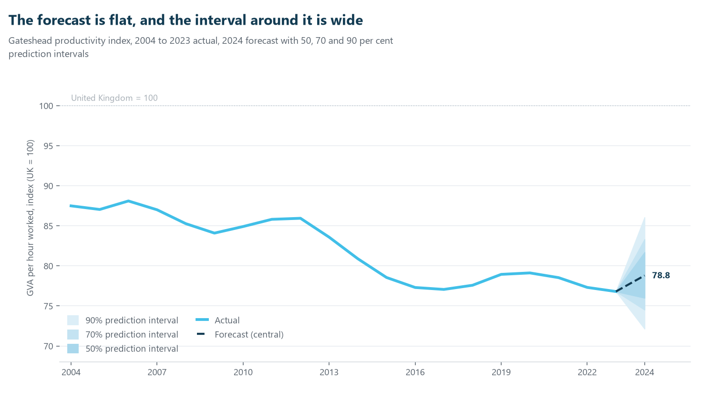
Source: ONS subregional productivity; Gateshead Council forecast. Index, UK = 100. Shaded bands are 50%, 70% and 90% prediction intervals; the model output covers one year ahead.
3. Business
Gateshead's business base has held above pre-pandemic levels, and the area continues to perform better than national averages on longer-term business survival. Total economic output reached an all-time high of £5.0bn at current prices in 2023, though in real terms output remains below its 2019 level. Internal econometric work suggests that the productivity gap is overwhelmingly structural, and forecasts imply slow real-term growth.
3.1 Gateshead overview
Gateshead's economy is built on a broad base of 5,580 registered businesses, a genuine manufacturing specialism, and notable strengths in construction and logistics. However, the borough's productivity (output per hour) remains below regional and national levels, and the gap appears to be structural. It reflects what Gateshead's economy makes and sells rather than how hard its people work.
There were 5,580 businesses registered in Gateshead in 2025 on the UK Business Counts register, the count taken from the Inter-Departmental Business Register each March. The base has been broadly flat for four years, at 5,610 in 2022, 5,585 in 2023, 5,535 in 2024 and 5,580 in 2025. The ONS Business Demography series counts enterprises differently, recording any enterprise active at some point during the year rather than registered on a single date, and on that basis, there were 6,120 active enterprises in 2024. Both series are used in this chapter. Registered counts describe the standing base, and the Business Demography counts describe births, deaths and survival.
Gateshead continues to perform well on business survival. Of the 750 businesses born in 2019, 41.3% were still trading five years later in 2024, against 38.3% across England. First-year survival is level with England (94.7% against 94.7%), but Gateshead pulls ahead from the second year onwards, at 76.7% against 74.7% at two years, 60.7% against 55.9% at three, and 50.7% against 44.9% at four. Businesses that establish themselves through the turbulent early period are therefore more likely to endure here than elsewhere in the region.
On productivity, output per hour worked stood at an index of 76.8 (UK = 100) in 2023. It has risen steadily over the past decade in cash terms while falling against regional and national benchmarks. Section 3.4 sets out the gap against each comparator. Over the period the productivity data covers, the borough's labour market does not appear to be the problem. The employment rate (76.3% in 2023) was among the strongest in the North East, though the latest survey suggests this is declining. The challenge is the value generated per hour worked, which is linked to within-sector performance and Gateshead's concentration in foundational and mid-value sectors, rather than high-productivity activities like financial and professional services.
What the internal productivity model shows
A two-way fixed-effects panel model across 289 English local authorities (2008–2021) finds that, once each area's own fixed characteristics are accounted for, measured factors explain almost none of Gateshead's productivity gap against its statistical neighbours. The gap is overwhelmingly a persistent, place-specific effect. The variables most strongly associated with higher productivity are industrial composition, and above all a larger share of knowledge-intensive business services (KIBS) and manufacturing. This suggests industrial composition may influence Gateshead’s long term productivity ceiling but does not identify a single policy lever. This model is referred to as the regression model throughout the rest of this assessment, and its specification, sample and limitations are set out in the technical annex.
Forecasts
Internal forecasting work shows that Real (chained volume) GVA is projected to rise modestly from £4,655m (2023) to about £4,706m in 2024 and £4,745m in 2025, with output at current prices passing £5.5bn by 2025.
In the original LEA, stakeholders pointed towards constraints on growth. These included the age and quality of manufacturing premises in Team Valley, a shortage of designated development land for logistics, and limited Grade A office space for digital start-ups and SMEs to grow into. To lift productivity, they called for more cohesive, sector-tailored business support and innovation provision (with better awareness of assets such as PROTO), improved transport links and targeted upskilling. In terms of this assessment and the levers that the council can pull, this assessment also supports these claims.
3.2 Economic analysis
Business base
- On the 2025 UK Business Counts release, Gateshead had 5,580 registered enterprises and 7,035 local units. The registered base has been broadly flat since 2022, at 5,610, 5,585, 5,535 and 5,580.
- On the 2024 Business Demography release, which counts enterprises active at any point in the year, Gateshead had 6,120 active enterprises. That base stood at 6,340 in 2019, fell during the pandemic to 5,955 in 2020, then recovered and has held broadly flat since, at 6,145 in 2021, 6,190 in 2022, 6,135 in 2023 and 6,120 in 2024.
- The two counts differ because they are built differently. The registered count is a March snapshot of the Inter-Departmental Business Register. The active count captures any enterprise with turnover or employment at some point in the year. The sector and size breakdowns in this chapter are derived from UK Business Counts, so they divide into the registered base rather than the active one.
- The size profile is slightly larger than the national one, not in line with it. On the 2025 business counts, micro-businesses (0–9 employees) make up 85.2% of Gateshead's registered enterprises, against 87.3% across the seven NEMSA authorities and 89.2% in England. Gateshead therefore has the lowest micro share of the three, meaning a marginally greater weight of small and medium-sized firms in its base. All three figures are on the enterprise basis.
Business births and deaths
- Business births have exceeded deaths in most recent years, though not consistently across the series. Births have run at about 700 a year since 2022. Deaths were 690 in 2022, 680 in 2023 and 615 in 2024, so the margin has widened slightly in the latest year.
- The exception is 2019, when deaths reached 1,025 against 750 births, a spike that happened before the pandemic rather than during it. Deaths then fell 47% to 540 in 2020, and have risen back gradually since, at 600 in 2021, 690 in 2022, 680 in 2023 and 615 in 2024. Deeming the pandemic a period of elevated business failure in Gateshead is not clearly supported by the counts.
- The birth–death gap narrowed to near parity in 2022 and 2023, with England and NEMSA following a similar pattern.
- Five-year survival remains a Gateshead strength. 41.3% of the businesses born in 2019 were still trading in 2024, against 38.3% across England, and the borough outperforms England at every horizon from two years onwards.
Figure 2: Business Births & Deaths
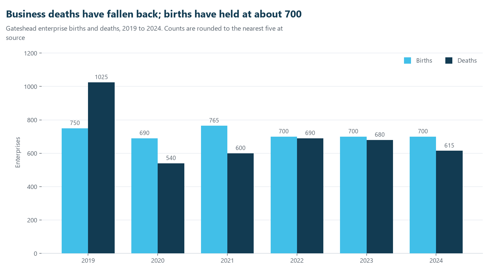
Source: ONS Business Demography 2024, tables 1.1a to 1.1d and 2.1a to 2.1d. Counts are rounded to the nearest five at source.
Figure 3: Gateshead total GVA, nominal and real, 2004 to 2025
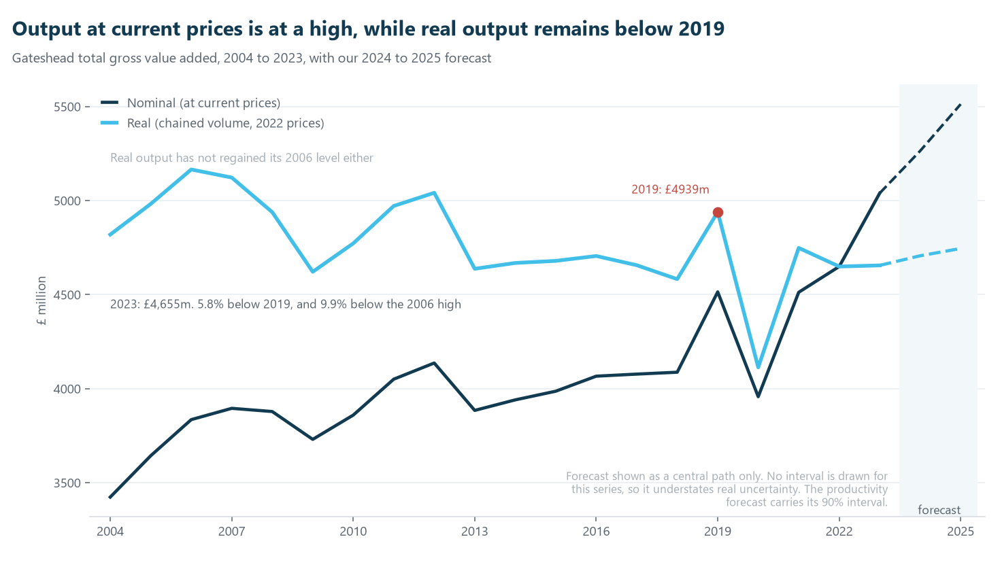
Source: ONS regional GVA (balanced), 2023; Gateshead Council forecasts for 2024-25. Real figures are chained volume measures in 2022 prices.
3.3 Industry analysis
Economic structure by sector
- By business count (2025), construction is the largest sector (15.0%, approximately 835 firms), a little above the England share of 14.1%, followed by professional, scientific & technical (12.2%). The latter is notably below the England share of 15.9% and is one of Gateshead's largest sectoral shortfalls (ONS broad industry groups).
- Other significant sectors by count are property (5.1%), information & communication (5.0%), health (5.0%) and transport & storage (4.6%). Information & communication is the second clear shortfall, at 5.0% against 7.3% in England (shares derived by summing 2-digit SIC divisions from the 2025 UKBC release).
- By employment, the structure has shifted since 2015. Total employee jobs stood at 95,000 in 2024, slightly down from 96,000 in 2015. The largest gains are in public services (28.4% of jobs, up from 23.9%) and distribution & hospitality (31.5%, up from 29.4%). Over the same period manufacturing has fallen to 10.5% from 12.3% and knowledge-intensive business services (KIBS) to 11.0%, from 12.2% (KIBS defined as SIC sections J to M).
- The two groupings most strongly associated with local productivity in the regression model (KIBS and manufacturing) have both lost employment share over the decade, and public services has absorbed most of the difference. Gateshead's mix has moved further away from the composition associated with higher output per hour rather than towards it.
- Gateshead's sector shares only move by one to two percentage points in an ordinary year in this survey, which can be absorbed by normal local variation. The KIBS share has ranged between 9.6% and 12.2% since 2015. The trend over the full period is the more reliable signal.
- By output (2023), the largest single contributor is wholesale and retail at 16.9% of GVA (£850m), followed by manufacturing at 12.0% (£604m) and construction at 11.7% (£589m). Manufacturing's share has fallen from 18.1% in 2015. Retail alone accounts for 9.6%. The economy remains weighted toward foundational and mid-value activity.
- Manufacturing is a clear specialism on all three location-quotient measures. Both its output share and its employment share have fallen steadily over the decade. On the Industrial Strategy's advanced-manufacturing grouping the borough shows a concentration of more than twice the national mix.
Economic specialisms (Location Quotients)
- Manufacturing has the clearest concentration on all three measures (business count, employment and GVA), positioning it as a genuine specialism. Retail, construction and transport & storage (logistics) are also specialisms.
- On employment, five sectors exceed an LQ of 1.25 on the 2024 survey, led by public administration & defence (1.63), transport & storage (1.61) and manufacturing (1.47), with wholesale & retail (1.30) and construction (1.27). Professional, scientific & technical (0.59) and information & communication (0.63) are among the deepest shortfalls.
- On GVA, retail stands out (LQ approximately 1.86). Conversely, professional/scientific/technical, information & communication and financial & insurance are noticeably under-represented.
- The GVA location quotients are carried forward from the 2025 assessment and have not been re-derived for this edition due to data availability. The business-count and employment quotients above are derived from this edition's own sources.
Figure 4: Employment Location Quotient
![Horizontal bar chart of employment location quotients for 16 sectors in Gateshead in 2024, where 1.00 means the same share of jobs as England and above 1.25 is read as a specialism. Five sectors pass 1.25. These are public administration (1.63, 7,000 jobs), transport & storage (1.61, 7,760 jobs), manufacturing (1.47, 9,955 jobs), wholesale & retail (1.30, 17,000 jobs) and construction (1.27, 5,900 jobs). Health & social work sits at approximately 1.00. Professional & scientific (0.59), real estate and financial & insurance have the lowest quotients.](lea-2026-interim/fig-05.png)
Source: ONS Business Register and Employment Survey, employees by 2-digit SIC 2024, via NOMIS (NM_189_1), aggregated to SIC sections with England summed on the same basis. Sectors under 500 employees are omitted. BRES publishes no confidence interval at this level, and its open-access cells are rounded, so the chart hides real sampling uncertainty.
3.4 Productivity analysis
Figure 5: Productivity benchmarking: Gateshead against the North East and England
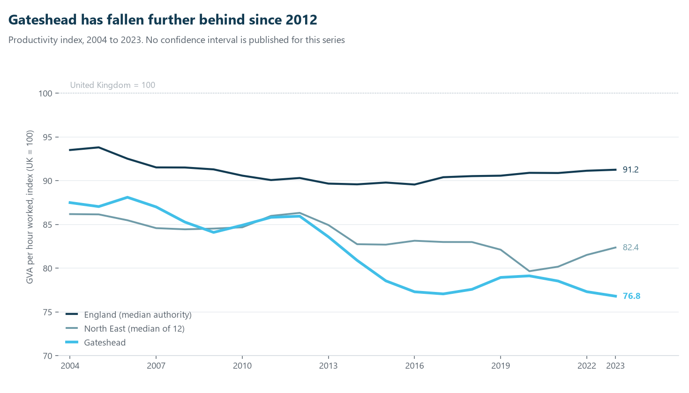
Source: ONS subregional productivity, 2023. Index, UK = 100.
- Output per filled job in Gateshead was £49,663 in 2023, below the median of the North East Mayoral Strategic Authority areas (£55,380) and well below the median English authority (£59,130). Within the region, North Tyneside leads on the 2023 basis (£61,463), with Sunderland (£59,885) also well above Gateshead, reflecting their higher concentration of productive industries.
- On a per-hour basis, Gateshead's index was 76.8 (UK = 100) in 2023, or £32.16 an hour, about 15.8% below the England median (£38.21) and 6.8% below the median of the twelve North East authorities (£34.49). Against the seven North East Mayoral Strategic Authority areas alone the gap is wider, at 10.7%.
- Output per filled job has risen over the decade (up 18.8% between 2015 and 2022, and 22.3% to 2023) but the gap to regional and national benchmarks has not closed.
- The constraint appears to be structural. Gateshead's employment rate has been among the strongest in the region over the period covered here, though the latest survey year suggests a decline. The issue is the value generated per hour, associated with sector performance and mix.
Table 2: Productivity Ranks, 2023
Measure, 2023 | Gateshead | North East Rank | Statistical Neighbour Rank | England rank |
|---|---|---|---|---|
GVA per hour worked (index, UK=100) | 76.8 | 8 of 12 | 12 of 15 | 256 of 296 |
GVA per job filled | £49,663 | 9 of 12 | 13 of 15 | 262 of 296 |
Source: ONS Explore Local Statistics compendium, Tables 21 and 22, 2023. Ranks are against 296 English local authorities and 15 statistical neighbours including Gateshead.
Ranking lower in terms of filled job than per hour worked is an hours effect. There are approximately 1,544 hours of work per filled job in Gateshead against an England median of 1,559 (0.9% below, and 177th of 296 authorities), which is close to average.
The distinction is important for strategy because the two measures answer different questions. The value of an hour of Gateshead's work is productivity, and the number of hours a Gateshead job contains is a labour market measure. The borough's hours are ordinary but its output per hour is not, so the weight of the problem sits with the value of the hour.
Valuing Gateshead's own industry mix at England's rates for each sector gives approximately £65,815 of output per employee job against England's £66,544, where the borough's actual figure derived by the same method would be £48,778. Using these figures, industry mix only accounts for approximately 4% of the gap and performance within sectors for approximately 96%, and Gateshead sits below England in twelve of fourteen sectors. While it is suggested that industry mix has the most association with output, the performance of those individual sectors is more important.
Productivity Findings
Across England, authorities with larger concentrations of manufacturing & KIBS are associated with higher productivity levels. This is the strongest association in the panel model but does not mean that it is a strong association in reality.
Shift Share Findings
When Gateshead’s industry mix is changed to reflect the national one, only around 4% of the productivity gap is explained by the industrial composition, and the other 96% by within sector performance.
Shift share findings appear to undermine the model, but both things can be true. Most of the differences between local authorities sit in a place-specific residual that is not explained by the model. New businesses entering Gateshead’s industries would face the same constraints holding current businesses back. The model compares authorities with one another whereas the shift-share asks what would happen to Gateshead if it held England's industry mix, while its own sectors carried on producing what they produce now. The two are not measuring the same quantity and therefore cannot contradict each other.
Taken together, changing the industrial composition may raise productivity growth potential over time, but closing the productivity gap will largely depend on improving performance within the sectors that are already present in the borough.
3.5 LQ and growth quadrant analysis
Setting the sectors Gateshead specialises in against their growth rates shows whether the borough is exposed to declining sectors or well placed in growing ones.
National growth against Gateshead's specialisms (employment, 2019 to 2024)
- Gateshead's specialisms in transport & storage, public administration and construction are all sectors that grew nationally over the window, at 5.9%, 17.6% and 6.4% respectively, which is a favourable position
- Its specialisms in manufacturing and wholesale & retail are in national employment decline, at 5.8% and 4.6% down
- Two growth sectors, information & communication (up 11.9%) and professional, scientific & technical (up 11.3%), are two key sectors where Gateshead is under-represented, at location quotients of 0.63 and 0.59
Gateshead's own growth (employment, 2019 to 2024)
- Transport & storage has grown 40.8% against 5.9% nationally, one of the borough’s strongest sectoral performers. The North East grew the same sector 27.8% over the window, so part of this is regional, although Gateshead grew it faster than all but two of its statistical neighbours
- Construction has grown 22.9% against 6.4% nationally and 15.3% across the other statistical neighbours, the second case where Gateshead has outpaced the national rate in a sector it already specialises in
- Manufacturing employment has fallen 5.1%, against a national fall of 5.8% and the rest of the statistical neighbour’s median fell 3.7%, so the borough is losing manufacturing jobs at close to the rate everywhere else is
- Information & communication employment has grown 4.9% against 11.9% nationally, so the gap to the national concentration has widened rather than closed
- Public administration has grown 16.7% against 17.6% nationally, in line with the national rate
- Health & social work has grown 13.0% against a neighbour median of 3.6%, the widest margin after transport & storage over the neighbour set
- Accommodation & food has fallen 5.5% while the neighbour set grew 10.2%
- Administrative & support employment declined by 35.3% while the neighbour set median was 4.8% growth
Gateshead's own growth (output, 2019 to 2023)
- Manufacturing output has fallen 19.4% at current prices, faster than the 5.1% fall in employment, so value per job in the sector has weakened over the window
- Construction output has risen 41.2% at current prices, the largest sectoral gain in the borough in cash terms, alongside a 22.9% rise in its employment (ONS regional accounts 2023, balanced GVA)
- Information & communication output has risen 34.5%, faster than its employment growth, so the value in this sector has been moving the right way, although from a small base
These are current-price figures and are not adjusted for inflation, so the 2019 to 2023 window carries a large general price effect.
Gateshead is growing fast where it already specialises and where national growth is slow, in logistics and construction. It is growing slowly where national growth is fast and it holds a weaker position, in information & communication and professional services. Manufacturing is losing both jobs and output. This combination raises the volume of work but does little for the value of it.
Figure 6: Quadrant Analysis
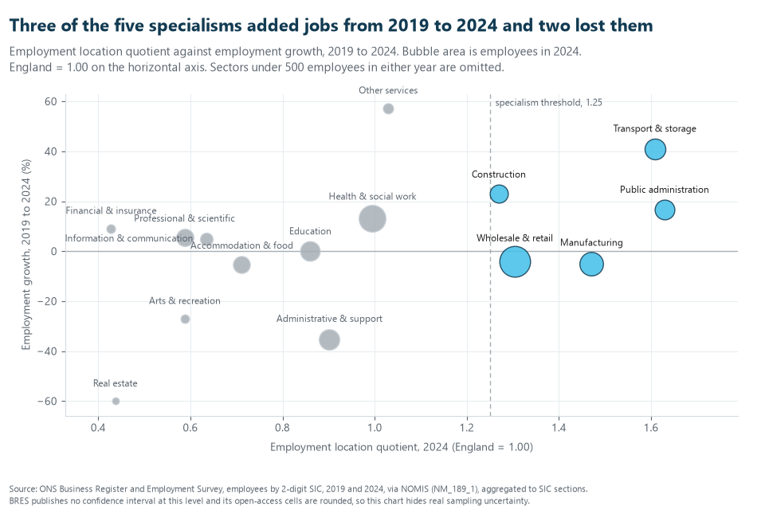
Source: ONS Business Register and Employment Survey, employees by 2-digit SIC, 2019 and 2024, via NOMIS (NM_189_1), aggregated to SIC sections.
3.6 Gateshead and the Industrial Strategy
The North East Local Growth Plan sets five missions. These are a growing and vibrant economy for all, the green energy revolution, a welcoming home to global trade, real opportunity, and a North East we are proud to call home. It also sets six priority sectors, being offshore wind & energy transition, advanced manufacturing including EVs, creative industries & content, life sciences, pharmaceuticals & process industries, tech, digital & AI, and defence, security & space. The plan identifies the Gateshead Quays, Baltic Business Quarter, Proto, Follingsby, mine water and the new Newcastle and Gateshead Mayoral Development Zone as key assets
The Local Growth Plan aligns with the UK Government's 2025 Modern Industrial Strategy, which names eight high-growth sectors. These are Advanced Manufacturing, Creative Industries, Life Sciences, Clean Energy, Defence, Digital & Technologies, Professional & Business Services, and Financial Services. This highlights advanced manufacturing as a strong specialism of the borough. Gateshead's relative employment concentration across these is:
Table 3: Employment Concentration Across the Industrial Strategy Sectors
Industrial Strategy Sector | Gateshead Employment | Concentration (England Mix = 1.0) |
|---|---|---|
Advanced Manufacturing | 3,000 | 2.10 (strong specialism) |
Creative Industries | 3,000 | 0.97 |
Digital & Technologies | 4,500 | 0.96 |
Professional & Business | 9,000 | 0.98 |
Financial Services | 1,250 | 0.57 |
Life Sciences | 50 | 0.21 |
Defence | 0 | 0.00 |
Source: ONS Business Register and Employment Survey, 2024, via NOMIS. Employment figures are approximate and rounded at source. This is a concentration ratio within the eight Industrial Strategy sectors, not a whole-economy location quotient. Clean Energy is omitted because it has no settled SIC definition that can be reproduced from published data.
3.7 Sectors in focus
Manufacturing is a key sector for both employment and output and one of Gateshead's clearest specialisms. Breaking employment down to 2-digit SIC level shows where that strength sits, and a mix of decline in some sub-sectors and growth in others (LQs compared to England).
Table 4: Manufacturing Employment by Sub-Sector
Manufacturing Sub-Sector (2-digit SIC) | Employees 2024 | Change Since 2019 | LQ Gateshead | LQ NEMSA |
|---|---|---|---|---|
25: Fabricated metal products | 2,000 | −11% | 2.57 | 1.83 |
10: Food products | 1,500 | +20% | 1.31 | 0.86 |
28: Machinery & equipment | 1,250 | −17% | 2.71 | 1.91 |
20: Chemicals & chemical products | 1,000 | 0% | 3.51 | 1.18 |
22: Rubber & plastic products | 700 | +100% | 1.68 | 1.68 |
18: Printing & reproduction of media | 500 | −50% | 1.99 | 1.35 |
33: Repair & installation of machinery | 400 | +60% | 1.20 | 0.74 |
29: Motor vehicles & trailers | 250 | 0% | 0.56 | 3.05 |
17: Paper & paper products | 200 | 0% | 1.42 | 1.37 |
Total manufacturing | 9,955 | −5% | 1.47 | 1.39 |
Source: ONS Business Register and Employment Survey, 2024, employees by 2-digit SIC, via NOMIS
Fabricated metal products, food products and machinery are the largest manufacturing employers. Fabricated metal, machinery and chemicals carry the highest concentrations, at between two and three and a half times the national mix, and chemicals is the borough's single most concentrated manufacturing sub-sector. Manufacturing employment overall has fallen 15% since 2015 and 5% since 2019, so the specialism is real but shrinking.
Transport & storage (logistics). Logistics is the borough’s second most concentrated sector and its fourth largest, employing 7,760 people. Gateshead has around 1.6 times the share of its workforce in logistics that the country does. It has been one of the fastest growing sectors in the borough, up 41% since 2019 and 63% since 2015. Warehousing accounts for almost all of that growth, rising 180% since 2019 to 3,500 employees, and is now the largest of the four sub-sectors. Lots of this growth is likely attributable to the Amazon fulfilment centre opened in Follingsby Park in 2021.
Table 5: Transport & Storage Employment by Sub-Sector
Transport & Storage Sub-Sector | Employees 2024 | Change Since 2019 | LQ Gateshead | LQ NEMSA |
|---|---|---|---|---|
52: Warehousing & support activities | 3,500 | +180% | 1.63 | 0.80 |
49: Land transport & pipelines | 2,500 | +11% | 1.51 | 1.40 |
53: Postal & courier activities | 1,750 | −12% | 2.42 | 0.93 |
51: Air transport | 10 | 0% | 0.04 | 0.84 |
Total transport & storage | 7,760 | +41% | 1.61 | 1.02 |
Source: ONS Business Register and Employment Survey, 2024, employees by 2-digit SIC, via NOMIS
Digital tech. A study of the sector by Gateshead Council and Sunderland Software City (2025) found that the number of tech companies has risen from 32 in 2005 to 168 in 2024, with a steady start-up pipeline. The sector is dominated by SMEs. Employment in 50–200 employee firms more than doubled from 411 (2019) to 1,074 (2024), but there is little activity in larger size bands, suggesting that Gateshead functions more as a start-up incubator than a scale-up hub. A key risk is declining investment.
Table 6: Information & Communication Employment by Sub-Sector
Information & Communication Sub-Sector | Employees 2024 | Change since 2019 | LQ Gateshead | LQ NEMSA |
|---|---|---|---|---|
62: Computer programming & consultancy | 2,000 | +60% | 0.73 | 0.60 |
61: Telecommunications | 350 | −42% | 0.66 | 0.73 |
63: Information service activities | 250 | 0% | 0.80 | 0.59 |
59: Film, video, TV & music | 225 | −55% | 0.53 | 0.25 |
Total information & communication | 2,885 | +5% | 0.63 | 0.52 |
Source: ONS Business Register and Employment Survey, 2024, employees by 2-digit SIC, via NOMIS, on the same basis as the tables above.
Computer programming and consultancy employment is up 60% since 2019, from 1,250 to 2,000, but it remains below its 2015 level of 2,500 and its concentration is 0.73 against the national mix. The sector has recovered strongly from a 2019 trough without regaining where it stood a decade ago, and information and communication sits at 0.63, well below the national average. The turnover and company-count evidence above points to genuine formation activity, so the constraint appears to be scaling, rather than start-ups.
Tourism and the visitor economy was worth an estimated £807m to Gateshead in 2025 with day visitors accounting for approximately 70% of the economic impact. There were around 6.45 million visitors in 2025, up slightly from 6.40m in 2024. The STEAM model estimates that the borough hosts 7,036 FTE jobs in 2025, down 1.6% on the year. Food and drink is the largest segment (approximately 2,644 FTE and £228m impact), followed by shopping (approximately 1,264 FTE and £92m). Tourism employment has been broadly flat since 2015 in Gateshead, whereas it grew to 104% of 2015 levels regionally and 116% nationally.
Other significant sectors. Four large sectors are not covered by Industrial Strategy framing. Wholesale & retail employs 17,000 people, 17.9% of employee jobs against 13.7% in England, and has fallen 4.2% since 2019. Health & social work employs 13,000, has grown 13.0% since 2019. Public administration and education employ 7,000 each. Together these four account for approximately 44,000 jobs, close to half of all employee jobs in the borough.
In the original LEA, stakeholders emphasised the Voluntary, Community and Social Enterprise (VCSE) sector's role both as an employer and in tackling social and economic challenges in deprived communities. Organisations with a unit registered in Gateshead have an estimated total income of around £521m in 2025, up 2% from 2024.
Table 7: Voluntary, Community and Social Enterprise Organisations
VCSE Organisation Type | Number in Gateshead |
|---|---|
Registered charities | 913 |
Community interest companies | 86 |
Mutuals & co-operatives | 46 |
Community & grassroots groups | 1,500–2,000 |
Source: Connected Voice, 2025
Micro and small charities make up around 64% of registered charities in Gateshead, about 10 percentage points lower than the national level. The sector employs around 2,750 staff and engages 10,950 volunteers in Gateshead.
3.8 Frontier, fragile and foundational sectors
Sector analysis by size alone tells you where people work, but not where the economy's future lies. Classifying Gateshead's sectors by concentration and direction of travel together gives a clearer picture.
Table 8: Frontier, Fragile and Foundational Sectors
Sector | Classification | Concentration ratio | Business growth | Employees | Signal |
|---|---|---|---|---|---|
Creative industries | Emerging frontier | 0.97 | +54.7% | 3,000 | Strong entrepreneurial dynamism |
Digital and technologies | Emerging frontier | 0.96 | +14.1% | 4,500 | Enabling sector, steady growth |
Professional and business services | Established base | 0.98 | +33.1% | 9,000 | Largest sector, not distinctive |
Advanced manufacturing | Fragile | 2.10 | −27.8% | 3,000 | Only true specialisation, and declining |
Financial services | Fragile | 0.57 | 0.0% | 1,250 | Stagnant |
Life sciences | Absent | 0.21 | −50.0% | 50 | No viable cluster |
Defence | Absent | 0.00 | n/a | 0 | No presence |
Outside the IS8 sectors | Residual | n/a | n/a | 74,175 | 78% of employment |
Source: The location quotient and employee columns are ONS Business Register and Employment Survey 2024 via NOMIS, but the growth column is on a different basis from the employment column. Creative industries at plus 54.7% is enterprise count over the business-counts series, not employment.
Gateshead has a smaller frontier sector. Neighbouring authorities have clear traded-sector anchors such as automotive in Sunderland and professional & financial services in Newcastle. Gateshead has near-average concentrations across almost everything. Its single distinctive concentration within these eight, advanced manufacturing at more than twice the national mix, is also the sector that has contracted most. Strengths identified by the whole-economy employment location quotients are not well aligned to the IS8 frontier framing, apart from manufacturing. A broadly diversified economy is resilient to shocks, but it lacks a distinctive growth engine, and diversification is arguably not a strategy.
The emerging frontiers are unproven. Creative industries and digital technologies are growing quickly, but both remain below national-average concentration and both grow from modest bases. Whether either becomes a genuine frontier depends on sustained business formation, attracting anchor employers, and whether Gateshead can differentiate its offer from Newcastle's rather than feeding it.
The foundational economy is the part of the economy that supplies the goods and services everyday life depends on. The North East Local Growth Plan describes it as providing "services and goods that are essential to everyday life", including food, retail, energy, transport, construction, agriculture, care and education, and it is one of the Plan's priorities. In this assessment, it is measured using the Foundational Economy Collective's classification, which covers the same activities and assigns every industry to one of three domains:
- Material – The infrastructure of everyday life, meaning utilities, food supply, transport and civil engineering
- Providential – Welfare services, meaning health, care, education and public administration
- Overlooked – Everyday goods and services that are easily taken for granted, such as building trades, hospitality, repair and personal services
On this measure the foundational economy produced approximately £2.9bn in 2023, or 61% of Gateshead's output (excluding imputed rent). Providential services are the largest domain at approximately £1.17bn, followed by Overlooked at approximately £910m and Material at approximately £783m.
Figure 7: Share of Gateshead's Foundational Output by Economy Domain, 2023
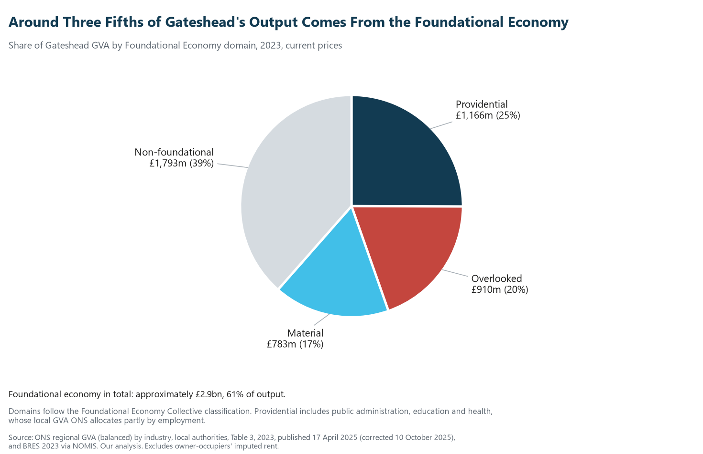
Source: ONS regional gross value added (balanced) by industry, local authorities, 2023, published 17 April 2025 (corrected 10 October 2025), and ONS Business Register and Employment Survey, employment by four-digit SIC, 2023, via NOMIS (NM_189_1). Our own derivation, excluding owner-occupiers' imputed rent.
Public administration, education and health produce approximately £945m between them, around a third of the foundational economy. ONS allocates local output for public administration and health using employment counts, and for education using public sector output and employment, so how well these services perform locally is difficult to determine using Gateshead's measured output. Setting them aside leaves a market foundational economy of approximately £1.9bn, around twice the size of the IS8 sectors at approximately £990m.
Within the market foundational economy, the foundational part of construction is the largest block at approximately £500m across its three divisions, followed by the foundational part of retail at approximately £345m and logistics at approximately £215m across land transport, warehousing and postal. Around three quarters of the borough's manufacturing output, in chemicals, metals and vehicle parts, sits outside the foundational economy.
Figure 8: Gateshead's 20 Largest Foundational Industries by Output, 2023
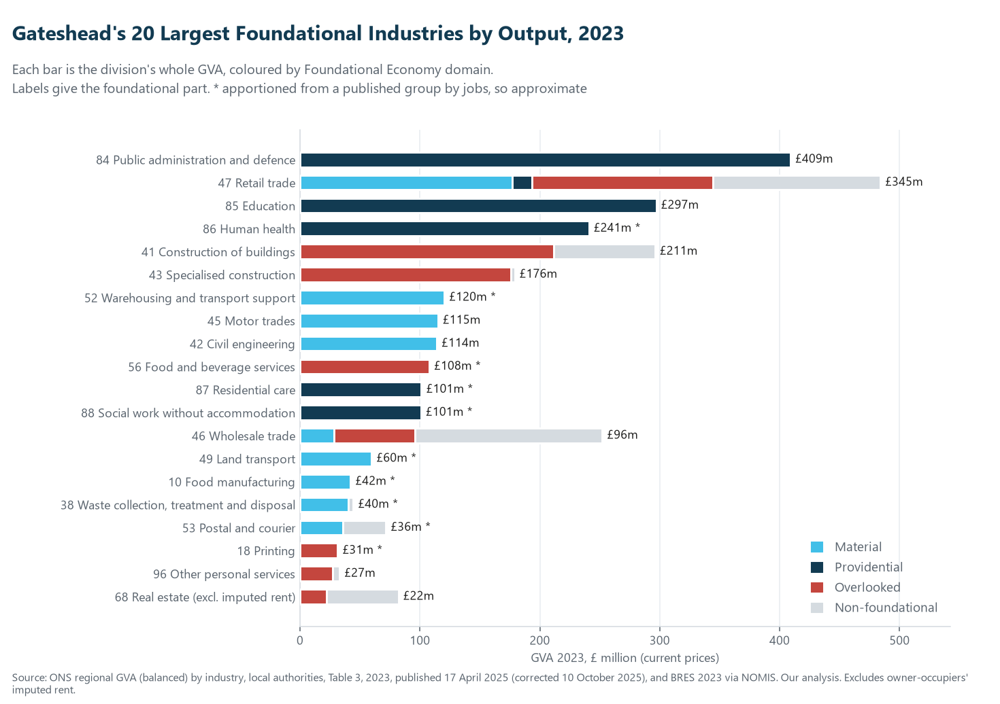
Source: ONS regional GVA (balanced) by industry, local authorities. Industries which ONS does not publish on their own are apportioned from their published group by jobs, which assumes equal output per job within the group, and are marked with an asterisk.
The foundational economy is the primary economic experience of most residents. The case for improving the value of work in these industries rests on household income as well as economic output.
3.9 Where Business Support Would Buy the Most
The productivity gap is the largest single economic problem identified in this assessment. It lies within the value of an hour of work rather than the number of hours. Changing this is difficult, but one way the council can intervene is through its business support offer. The ranking below divides each sector's output by the jobs in it. It is an internal calculation, not a published statistic, and it is used to rank sectors against one another rather than to state a level.
Table 9: Estimated Value per Job by Sector
Sector | GVA 2023 (£m) | Employee Jobs 2023 | Estimated Value per Job | Against the Borough Average |
|---|---|---|---|---|
Construction | 589 | 5,500 | £107,091 | 2.20 |
Financial & insurance | 119 | 1,230 | £96,748 | 1.98 |
Information & communication | 234 | 3,525 | £66,383 | 1.36 |
Public administration | 409 | 7,000 | £58,429 | 1.20 |
Wholesale & retail | 850 | 15,000 | £56,667 | 1.16 |
Manufacturing | 604 | 11,435 | £52,820 | 1.08 |
Education | 297 | 7,000 | £42,429 | 0.87 |
Health & social work | 443 | 11,000 | £40,273 | 0.83 |
Professional & scientific | 194 | 5,025 | £38,607 | 0.79 |
Administrative & support | 298 | 8,050 | £37,019 | 0.76 |
Other services | 50 | 1,500 | £33,333 | 0.68 |
Transport & storage | 252 | 8,760 | £28,767 | 0.59 |
Arts & recreation | 54 | 1,975 | £27,342 | 0.56 |
Accommodation & food | 119 | 5,500 | £21,636 | 0.44 |
All Sectors in Table | 4,512 | 92,500 | £48,778 | 1.00 |
Source: ONS regional accounts, balanced GVA by industry at current prices, 2023, and ONS Business Register and Employment Survey, employees by 2-Digit SIC aggregated to section, 2023, via NOMIS (NM_189_1). On the same year. This is our own derivation, not an ONS statistic. Not all sectors are shown.
Balanced GVA includes output produced by the self-employed. BRES employee jobs do not count them. The mismatch is largest in construction and in accommodation and food, and almost zero in manufacturing, health and public administration, so it distorts the ranking rather than shifting every row equally. Value per job in the self-employment-heavy sectors is therefore overstated relative to the rest.
Gateshead has lots of jobs in one of its lowest-value sectors. In 2024, transport and storage employs approximately 7,760 people at around £28,800 of output per job (2023), which is just over half the borough average. It was one of the largest growth sectors over the last decade, with employee numbers up 63% between 2015 and 2024. The borough has added work but has not improved value per job much, because the work it added was concentrated where value per job is lowest. This does not argue against logistics, which is real employment for residents who need it.
The same ranking against England changes the interpretation. A sector being low-value in Gateshead implies that either the sector is low-value everywhere, suggesting that the borough's problem is that it holds too much of it, or the sector pays better elsewhere, in which case the problem is how it operates locally.
Table 10: Estimated Value per Job, Gateshead Against England
Sector | Gateshead per Job Approximation | England per Job Approximation | Gateshead as a Share of England |
|---|---|---|---|
Construction | £107,091 | £102,649 | 1.04 |
Wholesale & retail | £56,667 | £56,546 | 1.00 |
Health & social work | £40,273 | £44,814 | 0.90 |
Accommodation & food | £21,636 | £27,912 | 0.78 |
Administrative & support | £37,019 | £48,758 | 0.76 |
Education | £42,429 | £56,267 | 0.75 |
Public administration | £58,429 | £82,817 | 0.71 |
Information & communication | £66,383 | £103,230 | 0.64 |
Arts & recreation | £27,342 | £43,031 | 0.64 |
Manufacturing | £52,820 | £92,197 | 0.57 |
Professional & scientific | £38,607 | £70,032 | 0.55 |
Transport & storage | £28,767 | £52,456 | 0.55 |
Other services | £33,333 | £64,665 | 0.52 |
Financial & insurance | £96,748 | £204,058 | 0.47 |
All sectors listed | £48,778 | £66,544 | 0.73 |
Source: ONS regional accounts, balanced GVA by industry at current prices, 2023, and ONS Business Register and Employment Survey, employees by 2-Digit SIC aggregated to section, 2023, via NOMIS (NM_189_1). On the same year. This is our own derivation, not ONS statistics.
Gateshead is below England in almost all sectors. Wholesale and retail is marginally ahead and construction is 4.3% above the England rate. Financial and insurance is the widest gap, at less than half the England rate, and transport and storage, professional and scientific, manufacturing and other services all sit near or below 60%. This shows the borough’s industries generate less value than the same industries do elsewhere. The full estimation of the breakdown can be seen below.
Table 11: Estimated Sectoral Contribution to the Productivity Gap
Sector | Employee Jobs, 2023 | Gap per Job to England | Contribution to the Gap | Share |
|---|---|---|---|---|
Manufacturing | 11,435 | £39,377 | £450m | 29% |
Transport & storage | 8,760 | £23,689 | £208m | 13% |
Public administration | 7,000 | £24,388 | £171m | 11% |
Professional & scientific | 5,025 | £31,425 | £158m | 10% |
Financial & insurance | 1,230 | £107,310 | £132m | 8% |
Information & communication | 3,525 | £36,847 | £130m | 8% |
Education | 7,000 | £13,838 | £97m | 6% |
Administrative & support | 8,050 | £11,739 | £94m | 6% |
Health & social work | 11,000 | £4,541 | £50m | 3% |
Other services | 1,500 | £31,332 | £47m | 3% |
Accommodation & food | 5,500 | £6,276 | £35m | 2% |
Arts & recreation | 1,975 | £15,689 | £31m | 2% |
Wholesale & retail | 15,000 | −£121 | −£2m | 0% |
Construction | 5,500 | −£4,442 | −£24m | −2% |
All sectors listed | 92,500 | £17,037 | £1,576m | 100% |
Source: Derived from Tables 9, 10 and 12. The total column (approximately £1,576m) is the within-sector part of the gap, and the remaining approximately £67m of the £1,643m total is industry mix
Table 12: Decomposition of the Value-per-Job Gap to England
Component | Value per Job (Approximation) | Share of the Gap |
|---|---|---|
England average | £66,544 | |
Gateshead's industry mix, valued at England's rates | £65,815 | |
Gateshead actual | £48,778 | |
Total gap | £17,766 | 100% |
Of which industry mix | £729 | 4.1% |
Of which performance within sectors | £17,037 | 95.9% |
Source: ONS regional accounts, balanced GVA by industry at current prices, 2023, and ONS Business Register and Employment Survey, employees by 2-digit SIC aggregated to section, 2023, via NOMIS (NM_189_1). Our own derivation, as in Tables 9 and 10.
If 96% of the gap is performance within sectors, then a strategy built mainly on changing which sectors the borough holds is aimed at 4% of the problem. This points towards raising what existing Gateshead firms in existing Gateshead sectors produce per hour. Some key variables that contribute to output that should be considered to address the output gap are:
Capital intensity
Firm size
Where output is recorded
Occupational mix
Innovation
Business by Number of Employees
Table 13: Local Units by Employment Size Band
Sector | Total | 0 to 4 | 5 to 9 | 10 to 49 | 50 to 249 | 250+ | Change in Sites of 10+ since 2016 |
|---|---|---|---|---|---|---|---|
Wholesale & retail | 1,460 | 730 | 315 | 365 | 40 | 5 | −7.9% |
Construction | 840 | 640 | 95 | 90 | 15 | 0 | 0.0% |
Professional & scientific | 740 | 565 | 85 | 75 | 15 | 0 | −5.3% |
Administrative & support | 650 | 435 | 85 | 100 | 20 | 5 | 0.0% |
Accommodation & food | 535 | 260 | 130 | 130 | 15 | 0 | −6.5% |
Health & social work | 460 | 185 | 75 | 160 | 35 | 0 | −11.4% |
Manufacturing | 375 | 170 | 65 | 95 | 40 | 5 | −9.7% |
Transport & storage | 330 | 230 | 30 | 40 | 25 | 5 | +40.0% |
Other services | 320 | 230 | 65 | 25 | 0 | 0 | −16.7% |
Information & communication | 315 | 225 | 35 | 45 | 10 | 0 | +22.2% |
Real estate | 310 | 260 | 35 | 15 | 0 | 0 | −40.0% |
Education | 225 | 70 | 25 | 90 | 35 | 0 | +25.0% |
Arts & recreation | 190 | 115 | 40 | 30 | 5 | 0 | +16.7% |
Financial & insurance | 115 | 90 | 15 | 10 | 0 | 0 | −50.0% |
All sectors | 7,000 | 4,290 | 1,120 | 1,295 | 265 | 30 | −3.0% |
Source: ONS UK Business Counts, local units by industry and employment size band, Gateshead, 2016 and 2024, via NOMIS (NM_141_1). Counts are rounded at source to the nearest five. Selected sectors only.
Most of Gateshead’s businesses are very small. Of the borough’s 7,000 business sites in 2024, 4,290 employ fewer than five people and a further 1,120 employ between five and nine, so approximately 77% employ fewer than ten. That is a smaller share than the North East at approximately 81% or England at approximately 85%, meaning Gateshead is slightly less reliant on micro sites.
Sectors above the borough average for value per job with a strong local base are candidates for raising the value of work. Construction (2.2 times the average, 90 sites at 10 to 49 employees) information and communication (1.36 times, larger sites up 22.2% since 2016) and manufacturing (1.08 times, with 40 sites at 50 to 249, one of the deepest mid-size bases of any sector along with wholesale and retail). Information and communication in Gateshead produces approximately 64% of what the same sector produces per job in England, and manufacturing approximately 57%. Closing the productivity gap in these sectors would be worth approximately £130m and £450m respectively.
Sectors employing many Gateshead residents in below-average value jobs such as transport & storage, accommodation & food, administrative & support, and health & social work account for a large share of employment.
Figure 9: Employment and estimated output per employee by sector
![Scatter chart of 14 sectors in Gateshead in 2023, plotting estimated output per employee job against the number of employee jobs. A dashed line marks the borough average of approximately £48,780. Construction (approximately £107,000) and financial & insurance (approximately £97,000) are furthest above it. Transport & storage (approximately £28,800, 8,760 jobs) and accommodation & food (approximately £21,600) are among the lowest. Wholesale & retail is the largest employer at 15,000 jobs, slightly above the average.](lea-2026-interim/fig-10.png)
Source: ONS regional accounts, balanced GVA by industry at current prices, 2023, and ONS Business Register and Employment Survey, employees by 2-digit SIC aggregated to section, 2023, via NOMIS (NM_189_1). Our own derivation, as in Table 9.
3.10 The Foundational Economy by Business Size
Foundational industries account for approximately 3,790 of the borough's 7,000 business sites in 2024, around 54%, and a larger share of its bigger sites. Around 26% of foundational sites employ ten or more people, against around 17% of sites elsewhere in the economy. Foundational industries hold around two thirds of the borough's sites employing 10 to 49 people, and at least half of the 295 sites employing 50 or more.
Table 14: Foundational Economy Business Sites by Size, 2024
Domain | Business sites, approximate | Fewer than 10 employees | 10 to 49 | 50 or more | Share employing 10 or more |
|---|---|---|---|---|---|
Material | 975 | 705 | 200 | 35 | 24% |
Providential | 745 | 395 | 265 | 75 | 46% |
Overlooked | 2,070 | 1,635 | 365 | 45 | 20% |
All foundational | 3,790 | 2,730 | 830 | 155 | 26% |
Rest of the economy | 3,220 | 2,685 | 450 | 95 | 17% |
Source: ONS UK Business Counts, local units by SIC division and employment size band, Gateshead, 2024, via NOMIS (NM_141_1). Each division is assigned to its Foundational Economy domain, and the few divisions spanning more than one domain are split using four-digit counts. Counts are rounded at source to the nearest five, so size bands do not sum to the totals, and around 45 of the borough's sites with 50 or more employees cannot be assigned to a domain. The figures are approximate.
- Overlooked industries are mostly micro businesses, with around four in five sites employing fewer than ten people. Specialised construction is the clearest case, with 500 of its 570 sites employing fewer than ten, so most of the borough's trades businesses operate at a very small scale
- Providential services have the deepest mid-size base, which reflects schools, care homes and health providers rather than businesses a business support offer would work with
- In the market foundational economy, the largest pools of sites employing 10 to 49 people are foundational retail (approximately 150), food and beverage services (approximately 125) and construction (approximately 90 across its three divisions), suggesting these are where businesses near the scale-up threshold are concentrated
3.11 What a 1% Gain in the Foundational Economy Is Worth
The Industrial Strategy names eight growth sectors and within them, a narrower list of frontier industries, such as automotive manufacturing, video games and legal services, where it expects the fastest growth. Because the foundational economy is so much larger than either, a small gain in its value per job adds as much to the borough's output as a much larger gain in those sectors. A 1% rise in value per job across the foundational economy, with jobs held constant, would add approximately £29m a year, around 0.6% of the borough's output. To add the same through the IS8 sectors alone, value per job across all of them would need to rise by approximately 2.9%. Through the frontier industries alone, it would need to rise by approximately 11%.
Table 15: What a 1% Gain in Foundational Value per Job Is Worth, 2023
Measure | All foundational | Market foundational only |
|---|---|---|
Added output a year, approximate | £29m | £19m |
Share of the borough's output | 0.6% | 0.4% |
Equivalent gain needed across the IS8 sectors | 2.9% | 1.9% |
Equivalent gain needed across the frontier industries | 11.2% | 7.5% |
Source: ONS regional GVA (balanced) by industry. Our own derivation, holding jobs constant. Market foundational excludes public administration, education and health. IS8 and frontier industries follow the DBT’s sector definitions list. Frontier industries that only partly map to SIC codes are counted whole, so the frontier equivalent is a lower bound.
A 1% gain spread across thousands of small sites is harder to deliver than a larger gain in a few bigger firms and closing the manufacturing gap alone would be worth far more than a 1% foundational gain. Set against the borough's whole value-per-job gap to England, a 1% foundational gain closes less than 2% of it. The case for the foundational economy is its reach, since it is where most residents work.
3.12 Where Focus Would Be Best
Setting the size of each foundational industry against how far it trails England per job, and whether it has businesses at the scale to grow, sorts the foundational economy into three groups:
- Raise performance – Transport and storage is the clearest case. It is the largest foundational gap in pounds, producing around 55% of England's value per job, and the number of its sites with ten or more employees has grown since 2016. Accommodation and food (around 78% of England) and other services, which are mostly personal services (around 52%), carry smaller gaps in pounds but large numbers of small sites
- Grow local capacity – Construction, and wholesale and retail, already match or exceed England per job. Construction's value per job is above the borough average, so adding work there increases this, but is not where the gap to England lies. The case for supporting both rests on jobs and resident income, and in construction on helping small trades businesses grow
- Providential Productivity – Public administration, education and health show gaps, but because of how ONS allocates output, those gaps reflect national and regional averages more than how services in Gateshead perform. Gains would be real for residents but would have little impact on local output figures.
Outside the foundational economy, manufacturing holds the largest gap and is where the Industrial Strategy case is strongest, so support for the advanced manufacturing base sits alongside the foundational focus. The Local Growth Plan already prioritises business support for food, construction, health and social care in the foundational economy. Taken together, the evidence suggests that the council's business support offer would reach more of the borough's economy by adding logistics and hospitality to that list and by helping construction trades grow than by concentrating on the frontier industries.
4. Population and labour market supply
Gateshead's workforce has participated strongly in recent years, with activity and employment rates above the regional average and broadly in line with England through 2024, although the latest survey year suggests employment is weakening within wide survey margins. The longer-running story of population decline has eased. Mid-year estimates show the population recovering since 2021, and projections point to modest working-age growth to 2043. The defining pressure is ageing, alongside a persistent skills gap at higher qualification levels and economic inactivity whose largest single reason is long-term sickness.
4.1 Gateshead overview
Gateshead's population was 196,151 at the 2021 Census, accounting for approximately 10% of the NEMSA residents. While the Census recorded a 2% fall between 2011 and 2021 (notably among young adults), mid-year estimates show the population recovering since, to 202,509 at mid-2025. The immediate challenge for labour supply is the age profile of those people.
The population aged 65+ continues to grow while the under-16 population declines. An ageing population brings pressure, with rising demand for health and social care and implications for public spending.
Population Projections - Gateshead's working-age population is projected to grow modestly, from about 122,700 in 2022 to 126,200 by 2043 (+2.8%). The old-age dependency ratio is anticipated to rise from roughly 33 to 37 older residents per 100 of working age over the period, as the 65+ population grows faster than the working-age base.
Gateshead residents have typically participated strongly in the labour market in recent years, above the North East average and broadly in line with England through 2023 and 2024. The latest calendar survey year (Jan–Dec 2025) suggests employment declining to around 70% (±4.3pp), level with the region, but now significantly below England. The fall itself sits within the survey's wide margins and needs confirming by future releases. The employment rate is lower among those aged 50–64 than younger groups, suggesting this age band finds it harder to stay in good work. Participation varies locally, with lower rates in more deprived areas.
Economic inactivity is 22.4% (±3.9pp) in Gateshead, against 24.7% (±1.1pp) in the North East and 20.5% (±0.3pp) in England. We cannot definitively say if Gateshead’s latest inactivity figures are above or below national and regional levels. The largest single reason, as it is nationally, is long-term sickness, at 33.0% of the economically inactive on the latest survey year. Approximately 23.0% of inactive residents want a job but are not actively seeking one which is sometimes referred to as ‘hidden unemployment’. There were 0.82 jobs per resident in 2024 and self-employment as a proportion of 16-64s at 6.3% (±2.3pp) remains statistically significantly below national levels of 9.5%.
Fewer than two in five working-age residents hold a Level 4+ qualification, well below the national average, while more are qualified to Level 3 only. The share with no qualifications is also above average. The future pipeline is slightly ahead of national benchmarks though disadvantaged pupils consistently underperform.
4.2 Labour market analysis
Population
- The population declined by around 2% between the 2011 and 2021 Censuses, with falls concentrated among those aged 15–24 and 25–44 and growth among those aged 65+.
- Mid-year estimates indicate recovery since 2021, reaching 202,509 at mid-2025, of which 125,561 are of working age (16–64).
- Projections to 2043 show the working-age population growing modestly (+2.8%) while the 65+ group expands faster, lifting the old-age dependency ratio from approximately 33 to 37 per 100 working-age residents.
Figure 10: Old-age dependency ratio to 2043 - Gateshead and comparators
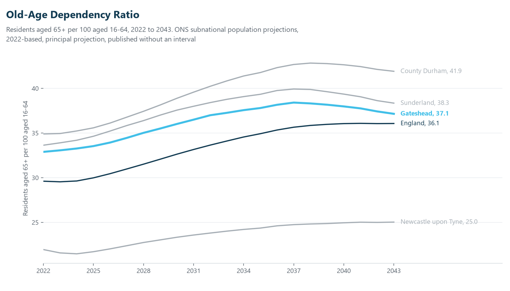
Source: ONS subnational population projections, 2022-based.
Figure 11: Working age and 65+ shares of the Gateshead population
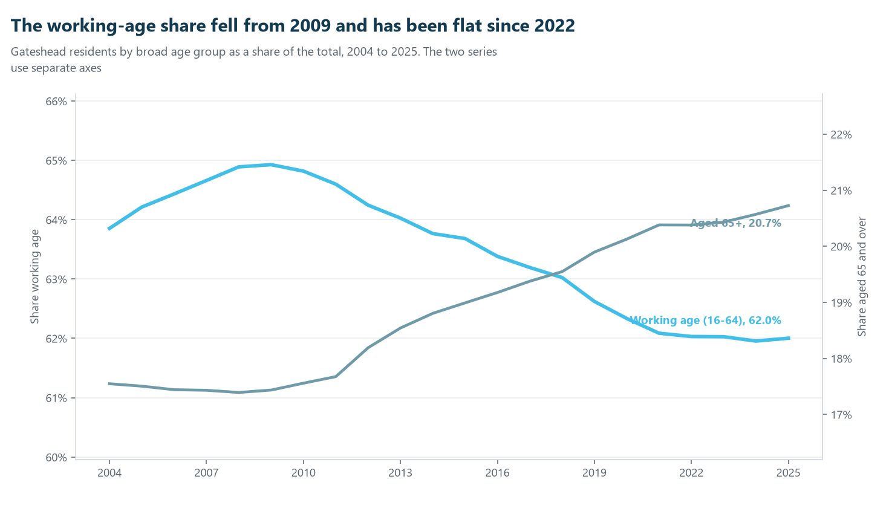
Source: ONS mid-year population estimates to mid-2025. The two series use separate axes.
Figure 12: Population by broad age group, Gateshead, 2004 to 2025
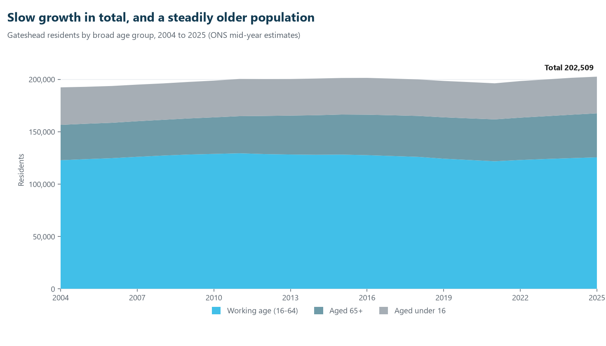
Source: ONS mid-year population estimates to mid-2025.
Economic activity (ONS Annual Population Survey, Jan-Dec 2025, the latest calendar year available. Gateshead figures carry 95% confidence intervals of 3 to 4 percentage points.)
- Gateshead's economic activity rate is around 75.6% (±4.0pp), against 74.3% across the North East and 79.5% in England.
- The employment rate is around 70.2% (±4.3pp), against 70.8% across the North East and 75.8% in England. The gap to England is statistically significant. The gap to the North East is not, so against the region Gateshead is effectively level.
- The unemployment rate is around 7.2% (±2.8pp), against 4.7% across the North East and 4.6% in England. This is an elevated point estimate, but at borough sample sizes it is not yet statistically distinguishable from either benchmark.
- The economic inactivity rate is around 24.4% (±4.0pp), against 25.7% across the North East and 20.5% in England. Long-term sickness is its largest single reason, at 31.4% (±8.9pp) of the inactive population.
- Self-employment accounts for around 7.7% (±2.9pp) of those in employment, below the North East at 10.1% and England at 12.6%.
- The administrative data neither supports nor contradicts a fall. The claimant count stood at 5,035 in July 2026, around 4.0% of residents aged 16–64.
- In Jan–Dec 2024 Gateshead's employment rate was 75.6% (±4.2pp), level with England, with inactivity at 20.8%. The one-year fall of around five percentage points is large but not statistically conclusive at these sample sizes. This also follows a strong 2023–24. This should be interpreted as an early warning, to be confirmed or disproven by future releases, rather than an established break.
Economic inactivity by reason
Table 16: Economic Inactivity by Reason
Reason for Economic Inactivity, Gateshead, Apr 2025-Mar 2026 | Share of Inactive | 95% Margin of Error | People |
|---|---|---|---|
Long-term sick | 33.0% | ±9.5pp | 9,500 |
Looking after family or home | 24.0% | ±8.6pp | 6,900 |
Student | 16.9% | ±7.6pp | 4,900 |
Retired | 7.5% | ±5.3pp | 2,200 |
Temporarily sick | 4.7% | not published | 1,300 |
All economically inactive aged 16–64 | 100% | 28,800 |
Source: ONS Annual Population Survey, Apr 2025 to Mar 2026, via NOMIS (NM_17_5, variables 1493 to 1498, measures 20599, 21001, 21002 and 21003). Shares are of the economically inactive population aged 16–64, not of the working-age population. Reasons do not sum to 100% because the "other" category is omitted.
- Long-term sickness is the largest single reason for economic inactivity in Gateshead.
- Gateshead is not distinguishable from the North East on this measure, and the gap to England is not statistically established.
- The share has drifted upwards over the decade without the movement being statistically established.
This supports treating long-term sickness as the largest component of Gateshead's inactivity and therefore the place where a participation intervention has the most people to reach. It does not support a claim that Gateshead is worse than its region or the country on this measure, because the survey cannot separate the borough from either at this sample size.
Figure 13: Labour market rates, Gateshead against the North East and England
![Bar chart of labour market rates for people aged 16 to 64 in Gateshead, the North East and England for April 2025 to March 2026, with 95% confidence intervals shown as whiskers and a red marker for Gateshead on the previous window, January to December 2025. Gateshead's economic activity rate is 77.6%, against 75.3% in the North East and 79.5% in England. Its employment rate is 72.4%, against 71.8% and 75.8%. Unemployment is 6.6%, against 4.7% in both comparators. Economic inactivity is 22.4%, against 24.7% and 20.5%. On every measure the change from the previous window is smaller than Gateshead's confidence interval.](lea-2026-interim/fig-14.png)
Source: ONS Annual Population Survey, Apr 2025-Mar 2026, via NOMIS (NM_17_5). Whiskers are the published 95% confidence intervals for every area; the red line is Gateshead on the previous window, Jan-Dec 2025.
Figure 14: Economic inactivity and productivity across English local authorities
![Scatter chart of the economic inactivity rate for people aged 16 to 64 against productivity (gross value added per hour, UK = 100) for English local authorities in 2023. The points form a broad cloud with only a weak downward slope. Gateshead is highlighted at an inactivity rate of approximately 21% and a productivity index of 76.8, in the lower middle of the cloud. Inactivity is a survey estimate, and Gateshead's has a confidence interval of approximately plus or minus four percentage points that the chart does not show.](lea-2026-interim/fig-15.png)
Source: ONS Annual Population Survey; ONS subregional productivity, 2023. Inactivity is a survey estimate whose confidence interval is not visualised here.
Qualifications and skills (ONS APS, Jan–Dec 2025, on the RQF basis. Gateshead confidence intervals are 3 to 5 percentage points.)
- Around 36.6% (±4.6pp) of Gateshead's 16–64s hold a Level 4+ (RQF4+) qualification, against 38.5% across the North East and 48.0% in England.
- Around 23.3% (±4.1pp) hold Level 3 as their highest qualification, against 23.2% across the North East and 20.6% in England.
- Around 10.0% (±2.9pp) hold no formal qualifications, against 9.6% across the North East and 6.1% in England.
Figure 15: Qualifications of working-age residents, Gateshead against the North East and England
![Bar chart of the highest qualifications held by residents aged 16 to 64 in Gateshead, the North East and England for January to December 2025, with 95% confidence intervals shown as whiskers. 36.6% of Gateshead residents hold Level 4 or above, against 38.5% in the North East and 48.0% in England. 23.3% hold Level 3 as their highest qualification, against 23.2% and 20.6%. 10.0% hold no qualifications, against 9.6% and 6.1%. Gateshead's intervals are much wider than the comparators', at approximately plus or minus 3 to 5 percentage points.](lea-2026-interim/fig-16.png)
Source: ONS Annual Population Survey, Jan-Dec 2025 (RQF basis), via NOMIS (NM_17_5). Whiskers are the published 95% confidence intervals for every area.
4.3 Resident wage analysis
Resident wages
- Median weekly pay for Gateshead residents rose from £353.80 in 2008 to £562.90 in 2024 and £578.80 in 2025 (the 2025 estimate carries a margin of ±7.8%, approximately ±£45, so small differences between authorities and years should not be interpreted as real). That is growth of 63.6% at current prices against a 60.1% rise in the CPIH annual index over the same period, so resident pay is broadly flat in real terms across seventeen years. The margin on the 2025 pay estimate is ±7.8%, wider than the 2.2% real change, so "broadly flat" is the strongest claim the data supports. It sits slightly above the North East median.
- In the last decade, across 2014–2024, resident median weekly pay grew by 45%, from £388.20 to £562.90, and reached £578.80 in 2025. England's median remains consistently higher. Over the same period consumer prices rose by roughly a third, so the real gain is positive but much smaller than the growth at current prices suggests.
- Within the North East Mayoral Strategic Authority, Gateshead residents have the third-highest median weekly pay on the 2025 figures at £578.80, behind North Tyneside at £625.60 and Northumberland at £591.30. On annual pay it ranks lower, at £29,494 in 2025 and fifth of the seven, which reflects more part-time workers, though a smaller one than the previous edition reported.
- In 2025, female resident weekly pay is £141.90 lower than male (£500.90 against £642.80) and annual pay £9,370 lower (£24,283 against £33,653) narrowing slightly from 2024.
Figure 16: Resident and workplace median gross weekly pay, Gateshead, 2008 to 2025
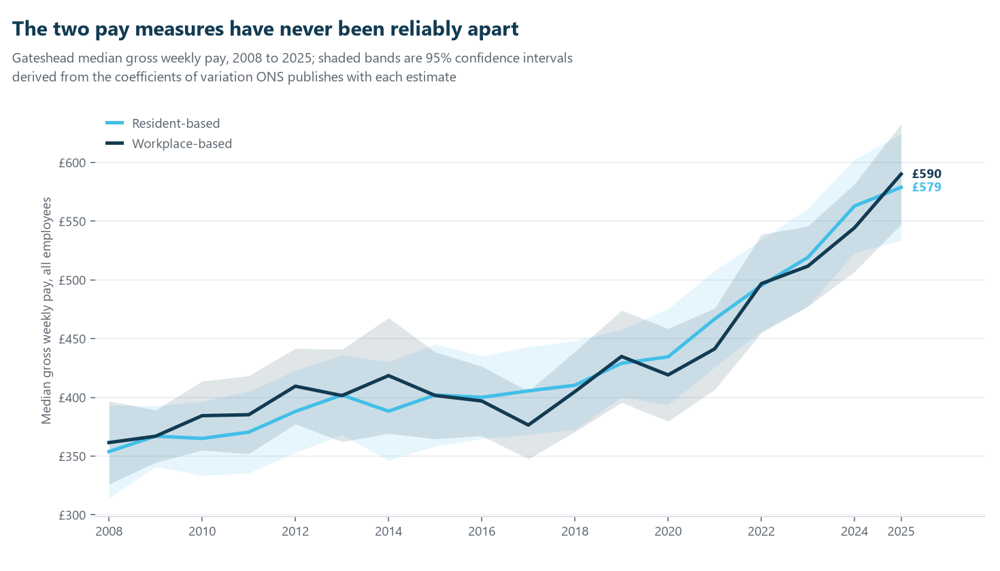
Source: ONS Annual Survey of Hours and Earnings, resident and workplace analyses, via NOMIS. Shaded bands are 95% confidence intervals derived from the coefficients of variation ONS publishes with each estimate.
Household income is the biggest single disadvantage in this assessment
Wages describe what employed residents earn per week, where gross disposable household income describes what households have to spend after tax, benefits and other transfers, across earners and non-earners. On that broader measure Gateshead's position is materially worse than its wage figures suggest.
- Gross disposable household income was £19,745 per head in 2024, against a median of £21,442 across the fourteen statistical neighbours and a national median of £25,332. The 2024 estimates also revised Gateshead's 2023 value down to £18,657.
- Gateshead is level with the bottom of its statistical neighbour group and 274th of 296 English authorities. This is the borough's weakest position on any headline indicator in this assessment, even weaker than its productivity ranking. It sits at £6 above Redcar and Cleveland at £19,739, which is effectively a tie rather than a distinction.
- The gap to England did not close. Gateshead's income per head grew 5.8% at current prices in 2024, below both the England median's 6.0% and the neighbour median's 6.3%, and the shortfall against the England median moved from 21.9% to 22.1%.
- The contrast with pay is the point. On resident weekly pay Gateshead sits 6th of the 12 North East authorities, essentially level with the regional median, at £578.80 against £577.85, a gap of under a pound and far inside the survey's margin. On household income per head, it is bottom of its peer group. The borough's problem is not what its workers earn per week, but what its households must live on.
- Weekly pay data only counts those in work, whereas household income is spread across the whole population, so higher inactivity pulls the second measure down while leaving the first untouched.
A strategy judged on wages could conclude the borough is performing reasonably. A strategy judged on what households have to live on would conclude the opposite. The second is closer to residents' experience, and it shifts the emphasis from pay rates toward hours, participation and the number of earners in a household.
Household Income vs Wages
Household income portrays a very different image to wages. Wages only measure people in work, where GDHI includes the effects of participation, hours worked and benefit income as well as many other means of income. It is a better gauge of living standards, and is a measure where Gateshead performs materially worse. This suggests that Gateshead has a bigger challenge around living conditions rather than pay rates.
4.4 Education and training
The qualifications Gateshead adults hold are consequential to decisions made years ago. More recent qualification statistics are improving, which is important for how the gap will be addressed in the future. The difficulty lies within the workforce already in place.
Post-16 participation is close to regional averages and below England. In 2026, 89.5% of Gateshead's 16–17 year olds were participating in education or training, against 89.9% across the North East and 92.0% in England. The composition differs from the national pattern, however. Fewer are in full-time education (84.4%, against 86.5% in England) and more are on the apprenticeship route (4.1%, against 3.6%). The borough relies slightly more than England does on work-based routes to keep young people engaged.
An authority that loses track of its young people records them as ‘not known’ rather than NEET and so appears to have a lower NEET rate than it does. Gateshead performs well in this regard:
Table 17: 16 and 17 Year Olds NEET or Activity Not Known
16–17 Year Olds, 2026 | Gateshead | North East | England |
|---|---|---|---|
NEET | 4.3% | 5.1% | 3.4% |
Activity not known | 0.6% | 2.1% | 2.4% |
NEET or not known | 4.8% | 7.2% | 5.8% |
Source: DfE, Participation and NEET age 16–17 by LA
For NEET alone, Gateshead sits above England and ranks 111th of the 152 authorities with education responsibilities. On the combined measure it sits below both England and the North East and ranks 77th.
Apprenticeship achievements by Gateshead residents rose from 690 in 2020/21 to 880 in 2024/25. Apprenticeship starts fluctuated over the same period, now standing at 1,410 in 2024/25. This indicates improving completion rates as opposed to the borough putting more residents into apprenticeships.
In 2024/25, 64% of Gateshead pupils met the expected standard in reading, writing and maths at key stage 2, against 63% in England. At key stage 4, the average Attainment 8 score was 47.0 against 46.0 nationally, and 49.9% achieved grade 5+ in English and maths GCSEs against 45.4% in England. The margin increased from the previous year because Gateshead improved while the national figure fell.
Table 18: Key Stage 4 Attainment
Key Stage 4 | 2023/24 | 2024/25 |
|---|---|---|
Grade 5+ English and maths, Gateshead | 48.7% | 49.9% |
Grade 5+ English and maths, England | 45.9% | 45.4% |
Gateshead's lead | 2.8pp | 4.5pp |
Attainment 8, Gateshead | 46.2 | 47.0 |
Attainment 8, England | 45.9 | 46.0 |
Source: DfE, Key stage 4 performance
Attainment at the higher standard is weaker than the headline suggests. Only 7% of Gateshead pupils met the higher standard at key stage 2, against 8% nationally. The expectation is met more often than in the rest of England, but the top band is achieved less often. Disadvantaged pupils consistently underperform, with the Level 2/3 attainment gap by age 19 relative to England remaining a concern.
This suggests that the education pipeline is not the source of the Level 4+ gap. Young people participate at close to regional rates, are tracked far better than across England, attain above national benchmarks at 16, and complete apprenticeships in growing numbers. The gap opens later, in the qualification level the workforce holds and in whether higher-skilled residents can find appropriate work locally rather than commuting out.
4.5 What population growth and higher participation are worth
Population growth adds very little. The subnational population projections (2022 basis) take Gateshead's working-age population from 122,739 in 2022 to 126,178 by 2043, a rise of 3,439 residents, or 2.8% across twenty-one years. Almost all of this is believed to have already happened. The mid-2025 working-age estimate of 125,561 is only 617 short of the 2043 projection. While the 2022 projections are now likely outdated, an increase of 3,439 at the current employment rate is approximately 2,400 additional people in work, which is worth around £120m, or 2.4% of output. This amount spread over two decades suggests that demographic growth is not a growth strategy.
Closing the entire participation gap to England adds more, but still not much. Gateshead's employment rate on the Jan-Dec 2025 survey year is 70.2% against England's 75.8%. Closing every point of that gap on today's working-age population of 125,561 would put approximately 7,000 more residents into work worth around £349m, or 6.9% of output.
Taken together, projected population growth to 2043 (2022 basis) and the England gap closed in full would add approximately 9,400 people in work and around £469m, or 9.3% of output. These estimations do not make sense to add in practice, but only to demonstrate that even in an optimistic jobs growth scenario, the improved output would likely be smaller than expected.
The productivity gap is worth substantially more, with no additional jobs at all. Gateshead's output per hour sits at an index of 76.8 against a UK average of 100. Reaching the UK average on the existing job base would raise output by 30.2%, approximately £1,522m, without a single additional resident entering work.
Table 19: Participation and Productivity Scenarios
Scenario | Estimated Additional Jobs | Estimated Output Effect | Share of 2023 Output |
|---|---|---|---|
Working-age population growth to 2043 (2022 basis) | 2,400 | £120m | 2.4% |
The England employment-rate gap closed in full | 7,000 | £349m | 6.9% |
Both together | 9,400 | £469m | 9.3% |
UK-average output per hour, no extra jobs | 0 | £1,522m | 30.2% |
Source: ONS subregional productivity 2023 (GVA per filled job, £49,663; output per hour index 76.8), ONS regional accounts 2023 (total GVA £5,039m at current prices), ONS subnational population projections (2022 base) and ONS Annual Population Survey Jan-Dec 2025. Scenario arithmetic, not a forecast. The participation bars are upper bounds.
These scenarios are set side by side to show which lever is larger, and they should not be read as a precise multiple of one another. They are not options, or statements of equally difficult challenges.
The case for raising participation does not rest on output. It rests on household income and the 22.1% shortfall in GDHI, and how this benefits those who gain that employment. A strategy that treats participation as the solution to closing the productivity gap is not appropriate.
5. Employment demand
5.1 Gateshead overview
Job numbers in Gateshead have fallen slightly since 2015, against both regional and national growth and the borough has a high volume of low skill and technician-level roles. Workplace wages have risen but remain below national levels.
Businesses in Gateshead employed 95,000 people in 2024, making up about 11.3% of NEMSA employment. Employment has been flat since 2015, while the NEMSA grew 5.7% and England 10.3%, so the borough has not shared in the jobs growth around it. The largest employing sector is wholesale and retail, at 17.9% of jobs, followed by health and social work (13.7%) and manufacturing (10.5%). Professional occupations account for around a quarter of employed residents, like the North East but below England. Around 7.5% (±2.8pp) of employed residents are in low-skilled elementary occupations.
On current occupational data, 49.4% (±5.4pp) of Gateshead residents work in employment in high-skill occupations (Jan-Dec 2025), ranking 4th of 12 in the North East and 8th of 15 among statistical neighbours (within survey margins), but 182nd of 294 English authorities. Gateshead’s position is reasonably strong regionally, which feels counterintuitive alongside the qualification profile, where fewer than two in five hold a Level 4+ qualification. Residents are doing higher-skilled work than their formal qualifications would predict.
Approximately 16,500 jobs were advertised between April 2025 and March 2026, around 1,000 fewer than the previous year (Lightcast unique job postings). These roles were concentrated in public administration, health & social care, wholesale & retail, and professional services. One in five vacancies were for professional roles, with digital skills becoming an increasingly common requirement. Around 6% of North East employers reported skills-shortage vacancies in 2024 and 12% reported in-work skills gaps.
Employment projections for the Gateshead and Newcastle Employment Land Review suggest there will be 14,000 new jobs (including self-employment) added between 2024 and 2045, from roughly 96,000 to 110,000. Manufacturing is forecast to decline, with growth in professional & business services, government services, construction, and transport and storage. Regionally, the North East faces a net employment requirement between 2020 and 2035 of approximately 49,000 with over half in roles requiring degree-level qualifications.
5.2 Employment analysis
Employment trends
Employment was 96,000 in 2015. It moved between 94,000 and 95,000 through 2016–2019, fell to 89,000 in 2020, and has since recovered to 95,000 in 2024. Over 2015–2024 employment is effectively unchanged in Gateshead, against +5.7% across NEMSA and +10.3% in England. Gateshead has not shared in the employment growth seen elsewhere in the region.
Jobs by Sector
- Wholesale and retail are the largest employer at 17.9% of employee jobs, well above NEMSA (13.1%) and England (13.7%).
- Transport and storage, including postal, employs 8.2% against 5.2% across NEMSA and 5.1% in England. Gateshead still has a logistics specialism, though the share has slightly fallen in the last year.
- Health and social work have risen to 13.7%, just below England (13.8%) and below NEMSA (16.5%).
- Manufacturing is 10.5%, against 9.9% across NEMSA and 7.1% in England. This is still a Gateshead specialism, but numbers are declining.
Employment forecasts
The 2025 Employment Land Review (Lambert Smith Hampton) presents three forecasts (Cambridge Econometrics, Oxford Economics, Experian) that agree on continued manufacturing decline despite its economic importance. The forecasts estimate a loss of between 1,000 – 4,000 jobs.
Growth is forecast in government services, professional & business support, transport & storage and construction, aligning with the Local Growth Plan and national Industrial Strategy.
5.3 Workplace wage analysis
Workplace pay (£590.10) has moved above resident pay (£578.80) in 2025, which suggests net in-commuting for higher-paid roles. However, the gap is small, sits inside the survey's margins and has changed sign between years, so it should not be interpreted as a structural change. Regionally, pay metrics in Gateshead are about average but nationally the whole of the North East performs poorly in this regard.
Figure 17: Workplace Against Resident Pay
![Dot chart of median gross weekly pay for all employees in 2025 across the seven NEMSA authorities, comparing resident and workplace pay, with 95% confidence intervals shown as whiskers. In Gateshead workplace pay is £11 a week above resident pay, at £590 against £579, and the two intervals overlap. Newcastle upon Tyne has the largest gap in the same direction, at £36. North Tyneside (£49) and Northumberland (£42) have the largest gaps the other way, where residents earn more than the jobs located there pay.](lea-2026-interim/fig-18.png)
Source: ONS Annual Survey of Hours and Earnings, resident and workplace analyses, 2025, via NOMIS. Whiskers are 95% confidence intervals derived from the coefficients of variation ONS publishes with each estimate.
5.4 Skills
- Around 6% of North East employers reported skills-shortage vacancies (SSV) in 2024, for a total of 7,400 SSV.
- On in-work skills gaps, 12% of North East employers reported at least one staff member not fully competent.
- The fall since the last employer skills survey (2022) runs alongside a weaker national picture, reflecting softer demand rather than an improved skills match.
5.5 Gateshead's share of regional job growth
The borough lost employee jobs over the decade while the region around it gained them. If Gateshead's growth in a sector comes at a neighbouring authority's expense, the regional total is unchanged and the gain is worth less than it looks.
Gateshead's share of regional employment has fallen. Across the seven Mayoral Strategic Authority areas, employee jobs rose from 795,000 in 2015 to 840,000 in 2024, a gain of approximately 45,000. Gateshead's own count remained relatively flat, moving from 96,000 to 95,000. The borough's share of regional employment therefore fell from 12.1% to 11.3% over the decade. The rest of the region grew while Gateshead remained flat.
Decomposing the shortfall points at local performance rather than industrial mix. Had Gateshead's employment grown at the English rate of 10.3%, it would have added approximately 10,000 jobs. Its industry mix accounts for a loss of only around 1,500. The remaining 8,400 is the local component, which is the amount by which Gateshead's own sectors underperformed the same sectors nationally.
Table 20: Shift-Share of Employee Jobs (2-Digit SIC Basis), 2015 to 2024
Shift-Share of Gateshead Employee Jobs, 2015 to 2024 | Jobs |
|---|---|
If Gateshead had grown at the England rate | +9,835 |
Effect of Gateshead's industry mix | −1,506 |
Local component, own sectors against the same sectors nationally | −8,424 |
Actual change | −95 |
Source: ONS Business Register and Employment Survey, employees by 2-digit SIC, 2015 and 2024, via NOMIS (NM_189_1). Our own derivation.
Industrial composition is what the regression model associates most strongly with output per hour, but this decomposition implies composition is not what drove the jobs shortfall. Gateshead's difficulty on jobs is that its sectors lose employment, or failed to add it, faster than the same sectors did elsewhere.
Table 21: Employee Jobs by Sector, Gateshead and the Rest of the Region
Sector, 2015 to 2024 | Gateshead | Rest of NEMSA |
|---|---|---|
Transport and storage | +3,000 | +8,590 |
Health and social work | +2,250 | +15,000 |
Education | +1,000 | +10,000 |
Public administration and defence | +1,000 | +9,000 |
Administrative and support services | −3,750 | −2,355 |
Accommodation and food | −700 | +3,650 |
Manufacturing | −1,775 | −7,715 |
Source: ONS Business Register and Employment Survey, employees by 2-digit SIC, 2015 and 2024, via NOMIS (NM_189_1). The rest of NEMSA is the other six authorities.
Administrative and support services is the single largest loss, down 3,750 jobs while the rest of the region only lost 2,355. Accommodation and food fell by 700 while the region added 3,650 (both grew nationally). Manufacturing fell significantly in both Gateshead and NEMSA, so that decline is regional rather than local to the borough.
6. Infrastructure & connectivity
Gateshead is well connected digitally, sitting just above the England and UK figures on gigabit and ultrafast coverage and marginally below on superfast. Housing is more affordable than regional and national averages, and property prices have risen but more slowly than elsewhere. Journey times to most key services are favourable. Structurally, Gateshead has not materially changed since the last edition of the LEA, and this section is largely a restatement of that position.
6.1 Gateshead overview
Gateshead has clear strengths in connectivity. 2026 data shows that broadband coverage is marginally above the national picture on gigabit (89.4% of premises against 88.4% in England) and ultrafast (90.1% against 89.3%), and marginally below on superfast (97.6% against 97.8% in England). Full fibre remains the weakest measure at 77.0% of premises, but the gap has closed. A year earlier Gateshead stood at 53.6%, and the shortfall against North East fell from 13.9 percentage points to 1.7, and against England from 19.8 to 4.3.
Public transport is a relative strength. The borough has good bus and metro provision, although east–west journeys often require interchanges that act as a barrier. Transport for the North's analysis puts 15% of the population at risk of transport-related social exclusion, against 31.2% across the North East. A higher-than-average share of households (32%) have no car or van, against 28% across the North East and 24% in England.
Property is more affordable than regional and national averages. The average price was £150,435 in 2025, up 38.7% since 2011. This is a smaller rise than in the North East (43.1%) or England (75.0%).
Office floorspace has fallen since 2011, though by less than the regional and national trend. In the original LEA, stakeholders stressed that total floorspace growth has not delivered enough high-quality or grow-on space for scaling micro-businesses, and that older industrial units such as those in Team Valley need renewal.
6.2 Infrastructure
Residential property
- The average property price (£150,435 in 2025, calendar-year mean) is below regional and national averages (the North East £158,946 and England £289,453) and is up 38.7% since 2011, with the sharpest rise in 2020–2021 at 7.9%.
- Flats and maisonettes saw the smallest increase since 2011 (23.6%) and remain the most affordable at approximately £97,000. Semi-detached homes rose most (43.3%), with terraced homes close behind at 42.1%. Detached homes cost around £280,000. All four types rose in value between 2024 and 2025, by between 0.6% (flats) and 3.4% (semi-detached).
- Price per square foot varies by over £100 across the borough, from approximately £211 to £229 in Low Fell down to approximately £121 to £135 in Bensham, the Avenues, Felling and Deckham.
- On quality, of the Energy Performance Certificates lodged for Gateshead dwellings, 41% are band D and 38% band C, which implies significant retrofit potential. This is a distribution of certificates rather than of homes, because certificates are lodged on sale, letting and improvement. Gateshead has above-average central heating but a high share of households facing at least one dimension of deprivation.
Figure 18: Housing Affordability Ratio, 2002 to 2025
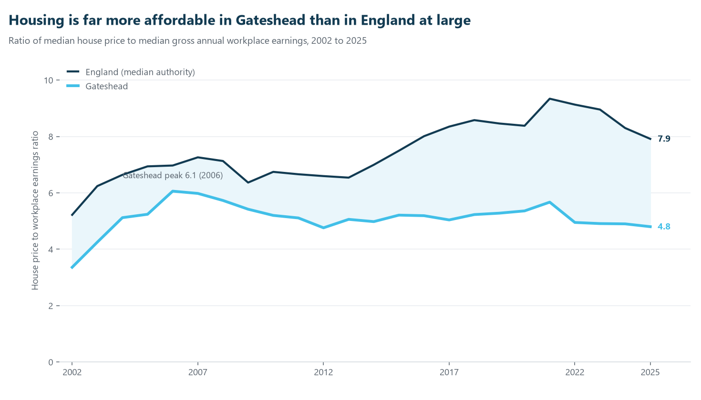
Source: ONS house price to workplace-based earnings ratio, 2002 to 2025. The comparator is the median English district.
Commercial property
- Industrial properties are the most abundant commercial type (2,420 of Gateshead's rateable properties in March 2026, against 1,750 retail, 1,390 office and 1,270 other) and have grown most since 2011, up 21.0%. The total number of rateable properties rose 10.2%, against 17.1% across NEMSA and 15.4% in England. Gateshead's commercial stock has grown, but at around three-fifths of the regional rate.
- Retail floorspace has fallen about 10% since 2019, from 481,000 to 432,000 square metres, consistent with the market shocks affecting town-centre retail and hospitality over that period, while the MetroCentre remains comparatively successful. Retail property counts have moved much less, at 1,770 in 2019 and 1,750 at March 2026, so floorspace is the better measure of the contraction. Office numbers are falling more sharply, from 1,570 in 2022 to 1,500 in 2024 and 1,390 at March 2026, a fall of 11% in four years.
- Industrial floorspace has risen since 2011, up 4.2% to 2.20 million square metres, while unit numbers rose faster, so the average unit is 14.6% smaller than in 2011, down from 1,056 to 902 square metres. The stock has grown and fragmented at the same time. Office floorspace fell 4.9% over the same period, from 223,000 to 212,000 square metres, a smaller fall than the region's 10.5% or England's 10.9%.
- Office and industrial space is least energy-efficient (13.2% and 10.7% of stock at EPC F/G), while retail/hospitality is most efficient.
- A borough with fragmenting industrial units, falling office numbers and slow commercial stock growth is a borough where a firm reaching fifty employees has nowhere to move to.
6.3 Connectivity
Digital
The following figures come from Ofcom's Connected Nations release for January 2026, for all premises. Superfast is defined as 30 Mbit/s or more, ultrafast 100 Mbit/s or more, and gigabit-capable 1,000 Mbit/s or more.
Table 22: Broadband Coverage by Connection Type
Connection Type | Gateshead | North East | England |
|---|---|---|---|
Superfast | 97.6% | 97.7% | 97.8% |
Ultrafast | 90.1% | 90.4% | 89.3% |
Gigabit Capable | 89.4% | 89.9% | 88.4% |
Full Fibre | 77.0% | 78.7% | 81.3% |
Source: Ofcom Connected Nations, local authority coverage file, January 2026, all premises.
Figure 19: Broadband Coverage by Connection Type
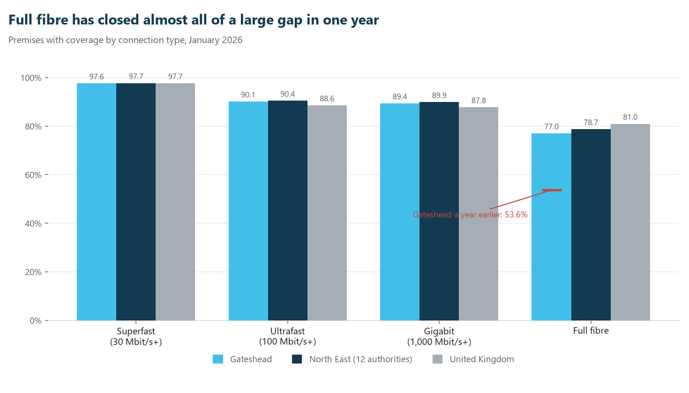
Source: Ofcom Connected Nations, local authority coverage file, January 2026, all premises. Regional and UK figures are premises-weighted from the same file. The marked point is Gateshead's full-fibre coverage in January 2025 on the same Ofcom measure.
Transport and journey times
- 32.4% of households own no car or van, against 27.6% across the North East and 23.5% in England (Census 2021).
- Journey Time Statistics for 2019 remain the most recent figures on travel time to named services. The Department for Transport has discontinued the series, so 2019 is its final year. The data shows average minimum travel times below the NEMSA average on all three modes for six of the eight services measured. These are: primary and secondary schools, further education, GPs, hospitals and food stores. Against England the advantage holds by public transport and walking and by cycling. By car it splits evenly. Gateshead is slower than the published England average to primary schools (8.1 minutes against 7.3), secondary schools (13.8 against 9.9) and further education (13.2 against 11.1), and faster to GPs, hospitals and food stores. The car measure reflects road conditions rather than distance, so an urban authority can be closer to a service and slower to drive to it.
- Gateshead is worse than both benchmarks on travel time to town centres, at 23.2 minutes by public transport and walking against 21.2 across NEMSA and a published England average of 20.4, and, on public transport, on access to medium-sized employment centres of 500 to 4,999 jobs. On the largest employment centres, those of 5,000 jobs or more, Gateshead is markedly better served than either benchmark on all three modes.
- EV charging provision is above regional and national levels. As of April 2026, Gateshead had 375 public chargers or 184.9 per 100,000 residents, against 144.4 across the North East and 171.9 in the UK. Of these, 148 were rated 50kW or above.
6.4 Carbon emissions
- Gateshead's greenhouse-gas emissions have fallen sharply, down 42.6% between 2012 and 2024, from 1,558 to 894 kilotonnes of CO₂ equivalent (CO₂e). Every sector contributed to the fall, including transport, which is down 16.5%.
- Most of what remains comes from transport and domestic sources, and their combined share has risen from 58% (2012) to 69% (2024). This is a change in composition. Transport and domestic have gained share because every other sector fell faster.
- The sectors that reduced their share of total emissions fastest are industry (21% to 15%) and commercial (12% to 8%).
- With industrial emissions now a small and falling share, the remaining reductions must come from homes and vehicles. This points to interventions based around retrofitting, clean energy and sustainable transport as priorities.
Figure 20: Greenhouse Gas Emissions by Sector
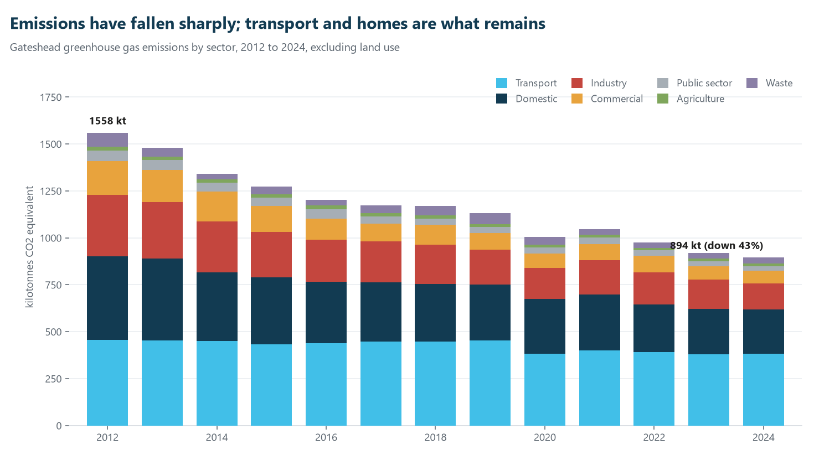
Source: DESNZ, UK local authority and regional greenhouse gas emissions statistics, 2005 to 2024, published 25 June 2026. Excludes land use, land use change and forestry.
7. Place
Gateshead is geographically and demographically diverse, and authority level aggregates can mask local differences. The rural west and urban east divide runs through deprivation, health, skills and attainment. A rising share of Gateshead's neighbourhoods now sit among England's most deprived 10% (16.7% in 2019 to 19.0% in 2025 IMD), highlighting the need for inclusive, place-based economic development.
7.1 Gateshead overview
This chapter uses small-area geography (MSOA/LSOA and wards) data to help understand local economic performance, deprivation, and skills and qualifications. Overall, Gateshead is made up of a rural west side, and a more heavily populated urban east and quayside. Deprivation typically manifests in the east of the borough. Employment activity predominantly concentrates around the town centre, the MetroCentre and Team Valley.
Figure 21: Neighbourhood Population Density by LSOA
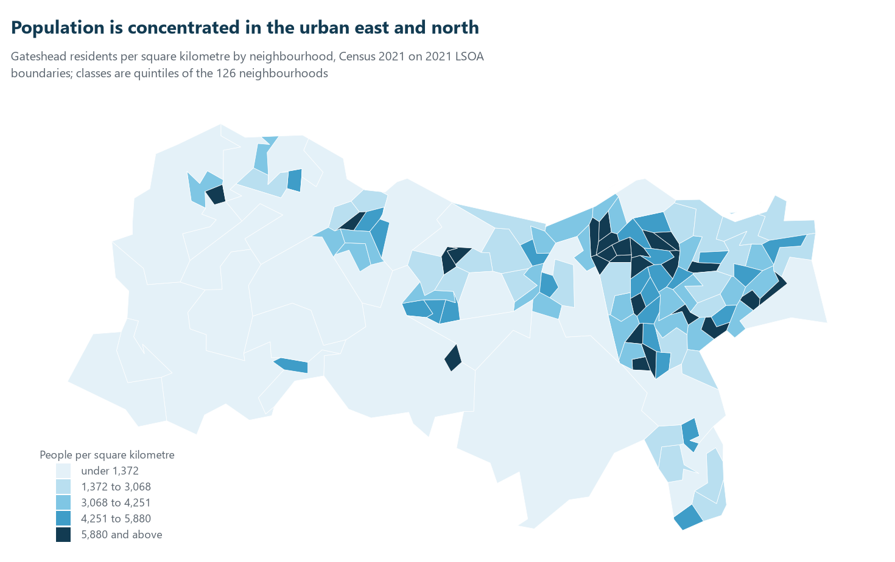
Source: ONS Census 2021. LSOAs hold similar populations, so smaller areas are denser, more urban neighbourhoods.
7.2 Measures of deprivation
On the Census 2021 household deprivation measure, Gateshead is on a par with the North East, and slightly more deprived than the rest of England.
Table 23: Household Deprivation, Census 2021
Households Deprived in… | Gateshead | North East | England |
|---|---|---|---|
1 dimension | 33% | 34% | 33% |
2 dimensions | 17% | 16% | 14% |
3 dimensions | 5% | 5% | 4% |
Not deprived in any | 45% | 45% | 48% |
Source: Census 2021.
On the English Indices of Deprivation, Gateshead's average deprivation score is broadly unchanged, but its position relative to other areas has worsened. The share of Gateshead LSOAs among England's most-deprived 10% has risen from 16.7% (2019) to 19.0% (2025).
Figure 22: LSOA Deprivation Decile Distribution
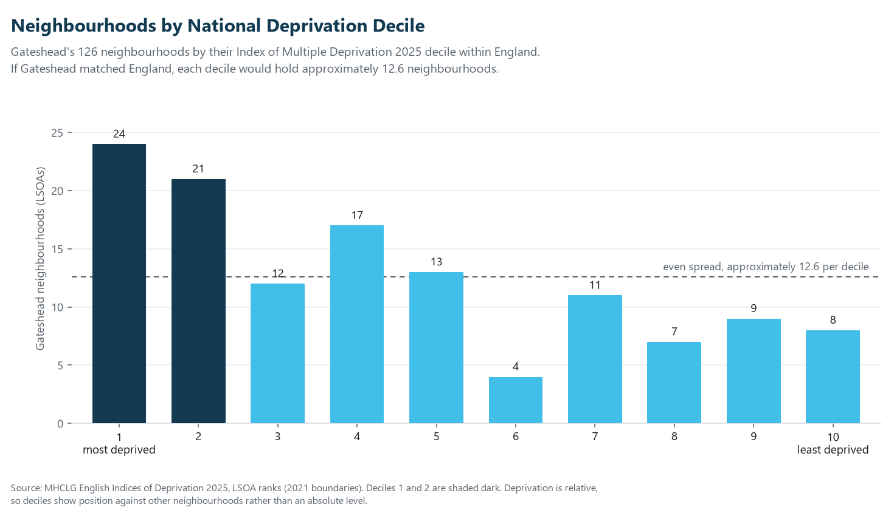
Source: MHCLG English Indices of Deprivation 2025.
Breaking this down by domain, we can see which areas Gateshead is struggling in more relative to the national picture. Health deprivation is the domain in which the borough is the most deprived.
Figure 23: Deprivation by Domain
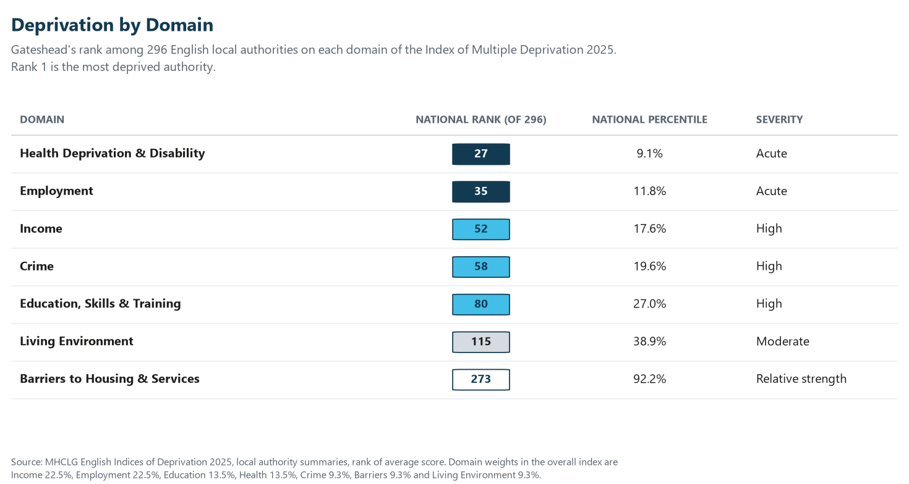
Source: MHCLG Indices of Deprivation 2025 and authors own calculations.
We can also weight the averages of each LSOA within areas (using best lookup methods) to determine a deprivation ranking of Gateshead’s wards.
Table 24: Wards by Deprivation Ranks
Rank | Ward | IMD Score | Neighbourhoods (LSOAs) | Of Which in England’s Most Deprived 10% | Population |
|---|---|---|---|---|---|
1 | Felling | 50.3 | 5 | 4 | 7,556 |
2 | High Fell | 47.8 | 6 | 3 | 9,457 |
3 | Deckham | 43.5 | 6 | 4 | 9,387 |
4 | Saltwell | 38.9 | 6 | 3 | 11,396 |
5 | Bridges | 37.5 | 7 | 2 | 11,629 |
6 | Windy Nook and Whitehills | 34.6 | 7 | 1 | 9,137 |
7 | Lobley Hill and Bensham | 33.7 | 5 | 2 | 8,050 |
8 | Chopwell and Rowlands Gill | 31.9 | 6 | 1 | 8,876 |
9 | Dunston and Teams | 31.5 | 5 | 0 | 9,318 |
10 | Blaydon | 28.3 | 7 | 1 | 10,567 |
11 | Chowdene | 27.7 | 6 | 2 | 7,941 |
12 | Lamesley | 26.5 | 5 | 1 | 9,623 |
13 | Birtley | 26.4 | 5 | 0 | 8,367 |
14 | Whickham North | 25.0 | 4 | 0 | 5,751 |
15 | Pelaw and Heworth | 24.4 | 5 | 0 | 8,141 |
16 | Wardley and Leam Lane | 23.7 | 6 | 0 | 8,769 |
17 | Winlaton and High Spen | 17.6 | 5 | 0 | 7,963 |
18 | Crawcrook and Greenside | 16.3 | 5 | 0 | 8,140 |
19 | Dunston Hill and Whickham East | 15.6 | 6 | 0 | 8,699 |
20 | Ryton, Crookhill and Stella | 14.5 | 6 | 0 | 9,873 |
21 | Low Fell | 10.0 | 6 | 0 | 9,503 |
22 | Whickham South and Sunniside | 9.1 | 7 | 0 | 9,779 |
Source: MHCLG Indices of Deprivation 2025 and authors own calculations. Ward scores are the population-weighted mean of the scores of the neighbourhoods within each ward, using ONS mid-2022 population estimates and the ONS best-fit lookup from 2021 lower super output areas to 2024 wards.
Figure 24: Deprivation and Economic Output
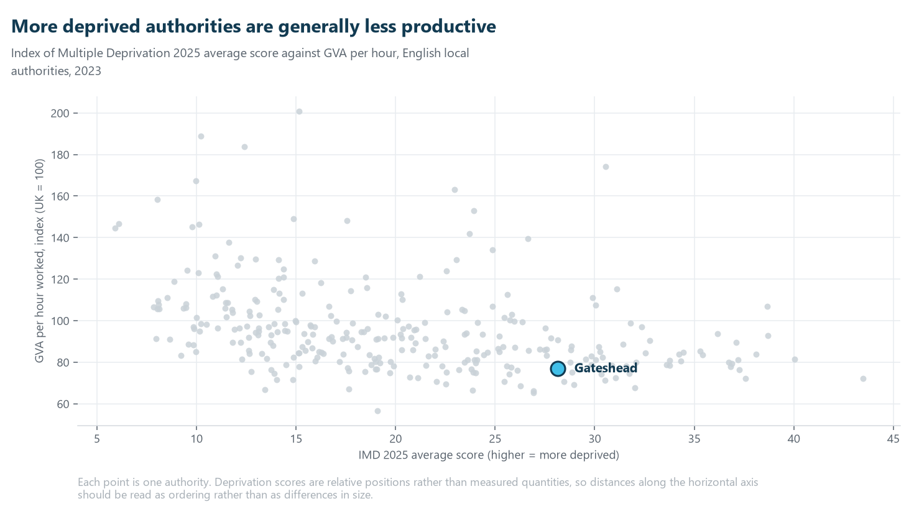
Source: MHCLG Indices of Deprivation 2025; ONS subregional productivity, 2023.
7.3 Localised economic performance
Economic activity
Apportioning GVA to wards by business stock and sector shows the west of the borough hosts less activity (most wards under £50m, reflecting their rural/residential character), while northern wards near transport corridors contribute more.
Lobley Hill & Bensham is estimated to have the highest ward GVA, at around £1.15bn, driven by the northern half of Team Valley. Bridges (town centre, Baltic Quarter), Whickham (MetroCentre) and Dunston & Teams (light industry, Watermark) are also significant. That is roughly a quarter of the borough's entire output in one of twenty-two wards. The concentration of employment in Team Valley makes it plausible, although it rests on the apportionment method rather than on measurement and should be read as indicative.
Where the Jobs Are
The ward GVA figures above are apportioned. Employment is measured, and BRES publishes it for Gateshead's 22 wards on the 2024 release, which is a firmer basis for the same argument.
Table 25: Employee Jobs by Ward
Ward | Employee Jobs 2024 | Share of Borough Total | Largest Sector |
|---|---|---|---|
Lobley Hill and Bensham | 22,015 | 23.0% | Wholesale & retail |
Bridges | 14,075 | 14.7% | Public administration |
Whickham North | 8,015 | 8.4% | Wholesale & retail |
High Fell | 7,225 | 7.6% | Health & social work |
Dunston and Teams | 7,075 | 7.4% | Administrative & support |
Lamesley | 4,930 | 5.2% | Manufacturing |
Birtley | 4,585 | 4.8% | Manufacturing |
Wardley and Leam Lane | 4,435 | 4.6% | Transport & storage |
Blaydon | 4,355 | 4.6% | Wholesale & retail |
Felling | 4,320 | 4.5% | Manufacturing |
The remaining twelve wards together | 14,505 | 15.2% | N/A |
Source: ONS Business Register and Employment Survey, 2024, employees by 2-digit SIC, via NOMIS (NM_189_1), wards as of May 2025, 2 Digit SIC aggregates. Borough total is different due to ward aggregations.
Employment is far more concentrated than population. Three of the twenty-two wards hold 46.2% of the borough's employee jobs. The three largest are the borough's three main employment sites being Team Valley, the town centre and the MetroCentre.
The wards with the fewest jobs are a mix of the western villages (Crawcrook and Greenside, Winlaton and High Spen, Chopwell and Rowlands Gill, Whickham South and Sunniside) and the eastern residential wards (Windy Nook and Whitehills, Deckham, Chowdene). They are places where people live rather than places people work, and typically the largest employer is in either the education or health sector, which are likely local schools or surgeries.
Physical distance from employment does not appear to be the borough's constraint, as the jobs sit in the deprived wards. What matters is the value of that work and whether residents hold it. The case for east to west connectivity is better argued as access to higher-value work than as access to work in general.
Figure 25: Employee Jobs by Ward
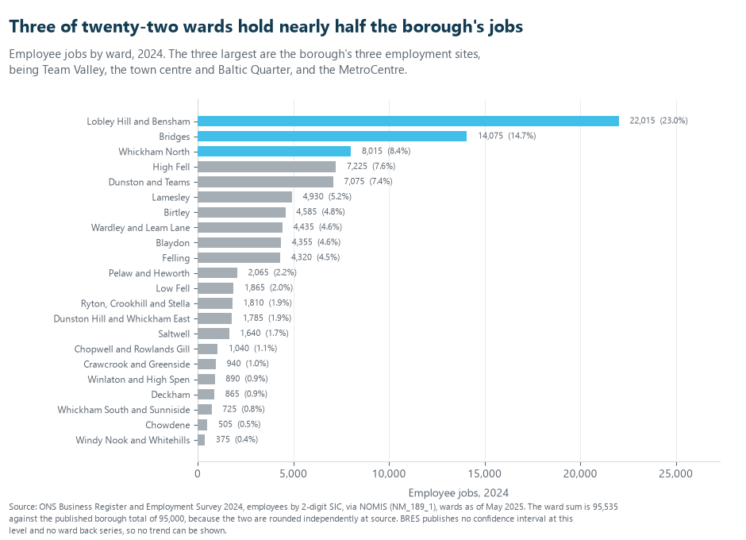
Source: ONS Business Register and Employment Survey 2024, employees by 2-digit SIC, via NOMIS (NM_189_1), wards as of May 2025. BRES publishes no confidence interval at this level and no ward back series.
8. Policy Implications
The evidence resolves into clear positions and priorities. Economically, the largest constraint is the value of the borough's work rather than the volume of it. For this reason, priorities are weighted towards things that could impact this. Evidence that would change the position of this conclusion would include:
- Sustained employment rate decline that is significantly lower than regional and national averages, confirmed by consecutive and statistically significant future APS releases
- Sustained convergence in productivity, output and household income gaps
- Evidence that within-sector productivity gaps are closing.
8.1 Strengths, Weaknesses, Opportunities and Threats
Strengths
Wages sit around regional benchmarks, so the jobs located in the borough are relatively well paid. High-skill occupations at 49.4%, in line with the region (4th of 12 within survey margins) but 182nd of 294 English authorities, so the strength is regional rather than national.
Advanced manufacturing concentration is more than double the national average, identifying it as a specialism of Gateshead’s. Logistics is the borough's strongest market-sector employment specialism, at a location quotient of 1.61, with employment up 41% since 2019 and 63% since 2015. The business birth rate (11.4% in 2024) ranks 97th of 296 English authorities. Employment has been a strength in past years, although that position is showing early signs of weakening.
Digital connectivity is at or slightly above national benchmarks across gigabit and ultrafast, and the full fibre availability gap has fallen significantly in a single year. Housing is more affordable than regional and national averages. Post-16 tracking is well ahead of England and school attainment sits above national benchmarks and is rising.
Weaknesses
Productivity is 23% below the UK average and 256th of 296 English authorities. Household income is the weakest single position in this assessment, at £19,745 per head in 2024, level with the bottom of its statistical neighbour group and 274th of 296 nationally.
Long-term sickness is the largest single reason for economic inactivity, at 33.0% of the inactive population. Fewer than two in five working-age residents hold a Level 4+ qualification, which could be feeding into this.
The Information & Communication business base thins sharply at the scale-up step. The sectors adding jobs fastest are among those with the lowest output per job, and Gateshead produces less per employee job than England in twelve of fourteen sectors. Advanced manufacturing, the borough's only distinctive concentration within the IS8, is in decline.
The visitor economy has not grown with the region or the country. Tourism was worth an estimated £807m in 2025 and supports 7,036 full-time-equivalent jobs, while tourism employment has been broadly flat over the last decade.
Opportunities
The green manufacturing transition offers a route to renew an existing specialisation rather than build one from nothing. Creative industries have grown fastest of the IS8 sectors on enterprise count, up 55% over the business-counts series from a small base of 265 firms. The North East Local Growth Plan and the Modern Industrial Strategy both prioritise sectors where Gateshead holds at least a foothold, and devolution settlements and a strategy refresh create an immediate window. The 16 to 17 participation pipeline is functioning better than the current skills stock would indicate.
Threats
Continued contraction in advanced manufacturing would remove the borough's only distinctive concentration within the IS8. Newcastle's pull on higher-value activity and higher-skilled workers is persistent and appears structural.
An ageing population raises the old-age dependency ratio from around 33 to 37 per 100 working-age residents by 2043. Relative deprivation is worsening, with the share of neighbourhoods in England's most deprived decile rising from 16.7% to 19.0%. Any strategy resting on participation gains has limited room, because the participation gap to England is not large enough to cover the productivity gap.
8.2 Priorities
1. Make work in Gateshead higher value. Knowledge-intensive business services and manufacturing are associated with better local productivity values. Gateshead is also underrepresented in professional, scientific and financial activities where output per hour is highest. This priority has the most direct evidential link to reducing the productivity gap. Although most of performance is determined within the sector itself, industrial composition can improve the ceiling over a longer horizon. Business support should be tailored towards industries where an additional job in the sector carries above-average value, whether there is a local base at the scale-up threshold to work with, and whether the constraint faced is one the council can resolve. On these criteria, construction, information and communication, and manufacturing would all be suitable priority industries. Constraints could include suitable land/premises for expansion. Prioritisation could also be focused on foundational productivity gains, where interventions would have a wider reach.
2. Determine whether Gateshead can retain scaling firms rather than functioning as a gateway. The borough has tended to hold a presence in sectors without sharing in their national growth, which aligns to the profile of a ‘feeder’. Information and communication is the clearest single case in the business counts. It has 45 sites employing 10 to 49 people and 10 employing 50 to 249 and has increased the number sites of 10 or more employees by 22.2% since 2016 from a small base. The pipeline is working but the step above it is not.
3. Reduce economic inactivity through health pathways. Long-term sickness is the largest single reason for inactivity in the borough, at 33.0% of the inactive population or approximately 9,500 residents. This is therefore the participation intervention with the most people to reach. Gateshead is not distinguishable from the North East or England on this measure at current sample sizes, so the case rests on the size of the group locally rather than on the borough being unusual. Participation gains are worth around a third of what closing the productivity gap is worth, so this priority should be argued on household income and on what work does for the people who gain it.
4. Determine whether East-West connectivity is constraining access to opportunity. The borough's persistent east-west divide in deprivation, health, skills and attainment is reinforced by a road network that separates rather than connects. Connectivity does not by itself raise productivity, but it determines which residents can reach which opportunities. Without it those inequalities will likely widen.
Notes on Evidence
Our regression model finds that measured characteristics explain almost none of Gateshead's productivity gap against its statistical neighbours, leaving a large place-specific residual. The model's variables are therefore not levers. Across 289 authorities and fourteen years, no authority meaningfully changed the characteristics the model assesses.
The reason for confidence is that a minority of authorities changed their trajectory anyway. Calderdale, which ONS classed among Gateshead's most statistically similar authorities, moved from an index of 78.3 in 2008 to 90.4 in 2021 while Gateshead fell from 85.3 to 78.5 over the same period.
The productivity position therefore appears to sit within local variation and outside the reach of the things this model measures. Whatever those authorities did, sits in the residual, which is what the model cannot see. Understanding how Calderdale turned its position, as the most directly comparable authority to have done so, could help inform Gateshead's future strategy.
8.3 Conclusion
Overall, Gateshead’s position has not significantly changed in the last year since the release of the original local economic assessment. Gateshead’s economy generates too little value for each hour worked. Output per hour stands at £32.16 against an England median of £38.21, placing the borough 256th of 296 English authorities, and the gap has not closed at all in the past decade.
Participation is not the constraint. Employment and activity rates have run at reasonable levels, and the recent declines are unsettled rather than clearly weaker. Employee jobs have been broadly flat since 2015 while the areas around Gateshead added them, so the borough’s difficulty is a growth gap rather than a decline.
The gap sits within sectors rather than between them. Valuing Gateshead’s industry mix at England’s rates accounts for around 4% of the shortfall in value per job. The remaining 96% is the performance of the sectors the borough already holds. Changing the industrial composition may raise the ceiling over a long horizon, but raising what existing firms produce addresses the rest.
Household income is where this is felt. Gross disposable household income stands at £19,745 per head, 274th of 296 authorities and level with the bottom of Gateshead’s statistical neighbours. Wages depict a slightly more positive story than household income because pay counts only those in work, whereas household income spreads across everyone.
A place-specific gap is not a fixed one. Calderdale, which ONS classes among Gateshead’s most similar authorities, moved from an index of 78.3 in 2008 to 90.4 in 2021 while Gateshead fell from 85.3 to 78.5. Whatever produced that movement is not easily explained by typical economic data sets, and it is also where the room for local action potentially sits.
The evidence points strategy towards the value of work rather than the volume of it, and towards the sectors already present rather than the ones the borough lacks.
TECHNICAL ANNEX
This section contains model method notes, results, diagnostics, errors and caveats. It also contains the data edition table that governs the data found within this assessment. No new findings are presented beyond this point. The annex is included for technical assurance only.
Technical Annex - Productivity Model and Forecasts
This annex documents internal econometric and forecasting work, referenced throughout the LEA. The work is associational, not causal, and should inform judgement rather than be read as a set of levers that mechanically raise output.
A. The productivity model
Specification. A two-way (authority and year) fixed-effects panel regression of ln(GVA per hour) on structural drivers, across 289 English local authorities, with standard errors clustered by authority. The effective estimation window is 2008–2021, set by joint data coverage rather than the full 2004–2023 span.
Why 289 authorities and not 296. The ONS subregional productivity series carries 296 English local authorities in every year of the period, and that is the denominator used for every productivity and output ranking quoted in this assessment. The model drops any authority-year missing an observation on any regressor, which leaves an estimation sample of 4,024 observations across 289 authorities and 14 years. Within the estimation window that is 4,024 of a possible 4,046 authority-years, or 99.5%, so the panel is very nearly balanced.
Seven authorities have no complete year and fall out entirely, and the reason is administrative rather than statistical. Six of them are authorities created by local-government reorganisation during or after the period. North Northamptonshire, West Northamptonshire, Cumberland, Westmorland and Furness, East Suffolk and West Suffolk each have complete coverage on every other regressor, including the Level 4+ measure, but no ASHE workplace earnings at all, because that series has no back-run on their current authority codes. Only the Isles of Scilly is dropped for the reason usually assumed, which is that a very small authority carries suppressed or unusable survey estimates. The difference between 289 and 296 should therefore be read as a boundary-change artefact plus one genuine suppression, not as a modelling choice.
The separate coverage figures for the regressors, 89.6% for the Level 4+ measure and 78.2% for ASHE workplace earnings, are computed across the full 2004–2023 span and are what sets the estimation window at 2008–2021. They are not what sets the authority count.
Baseline coefficients (dependent variable: ln GVA per hour):
Table 26: Panel Model Baseline Coefficients
Driver | Coefficient | Standard Error | Significance |
|---|---|---|---|
Population density (log) | −0.5810 | 0.1164 | 1% |
Claimant rate | −0.0068 | 0.0032 | 5% |
Workplace earnings (log) | 0.0686 | 0.0361 | 10% |
5-year population change | 0.0031 | 0.0014 | 5% |
NVQ4+ share (log) | −0.0126 | 0.0088 | ns |
Household income, GDHI (log) | 0.0814 | 0.0764 | ns |
Employment rate | −0.0003 | 0.0004 | ns |
Observations 4,024, R-squared 0.941, within-R-squared 0.055. Standard errors are clustered by authority (HC1) on the baseline specification, and an independent re-estimation of the same model differs only in the third decimal of the standard errors. A broadband variable (% premises below 30 Mbps) previously appeared in this table and has been removed, because the current ONS compendium release carries broadband for a single year (2025), outside the estimation window, so it cannot enter the panel model. (An earlier release-mapping error had also populated this variable with a different indicator's data; indicators are now resolved by published title rather than by sheet position, so a renumbered release cannot mis-map silently.)
Sector-augmented model. Adding broad sector shares, industrial composition is the strongest correlate. Manufacturing 0.658 (p<0.01) and Knowledge-Intensive Business Services (KIBS) 0.623 (p<0.01) are the strongest positive correlates, with public services, distribution & hospitality and primary/utilities/construction also positive and significant. Sector-share coefficients are read relative to the omitted support-and-other-services share (shares sum to one, so one category is dropped to avoid collinearity). In this specification the claimant-rate coefficient strengthens to −0.0165 (p<0.01) and NVQ4+ becomes −0.0198 (p = 0.041). (Source: Gateshead Council panel model, sector-share specification.)
Model diagnostics. Six diagnostics are run on the primary fixed-effects model, and the list is given in full so that what is not run is as visible as what is. An F test rejects pooling in favour of fixed effects. A Hausman test supports fixed over random effects. A Pesaran CD test examines cross-sectional dependence. Breusch–Godfrey and Wooldridge tests examine serial correlation, and their rejection is why standard errors are clustered by authority in every reported model and why Driscoll–Kraay errors are carried as a robustness check. Variance inflation factors are computed, with a warning raised above 10, though these are calculated on a pooled ordinary-least-squares fit rather than on the within-transformed panel, so they overstate collinearity relative to the model estimated.
The NVQ4+ puzzle. The within-panel NVQ4+ coefficient is non-positive in most specifications, though it is not sign-stable across sub-periods. Candidate explanations, strictly associational: residents are measured where they live but produce where they work.
Gateshead's fixed effect. Gateshead's estimated authority effect sits in the lower part of the English distribution, and its model residuals trend downward over time, meaning productivity falls faster than the observables predict.
Has any authority moved its position? The finding that measured characteristics explain almost none of Gateshead's gap invites a fair challenge. If the residual is what matters and the residual is place-specific, is the position simply fixed? Two tests were run on the estimation panel to answer that, and they point in opposite directions in a way that is useful.
The measured variables barely move, and one of them does not move at all. Splitting each regressor's variation into the part that lies between authorities and the part that lies within an authority over the fourteen years gives the following.
Table 27: Within-Authority Share of Regressor Variation
Regressor | Share of variation that is within-authority |
|---|---|
Population density (log) | 0.1% |
Household income, GDHI (log) | 14.8% |
NVQ4+ share (log) | 26.3% |
Workplace earnings (log) | 27.9% |
5-year population change | 33.6% |
Employment rate | 41.9% |
Claimant rate | 50.5% |
The model's largest and most statistically significant coefficient sits on population density, and across 289 authorities and fourteen years density is almost perfectly fixed within a place. Only 0.1% of its variation happens inside an authority over time. The two variables that do move most, the claimant rate and the employment rate, are respectively cyclical and indistinguishable from zero in this model. No authority in the panel meaningfully changed the measured characteristics the model prices. That is the strongest available statement of why these coefficients should not be read as levers.
Table 28: Authorities That Moved Their Residual Trend
Authority | Residual trend | Rank of 289 | Productivity index, 2008 to 2021 |
|---|---|---|---|
Calderdale (a Gateshead statistical neighbour) | +0.0197 | 7 | 78.3 to 90.4 |
Wyre | +0.0240 | 5 | 69.2 to 88.6 |
Braintree | +0.0166 | 9 | 88.0 to 104.8 |
Newcastle upon Tyne | +0.0054 | 73 | 81.7 to 88.1 |
Gateshead | -0.0101 | 254 | 85.3 to 78.5 |
Calderdale is the comparison that matters most, because ONS places it in Gateshead's own group of statistically similar authorities. In 2008 Gateshead stood seven index points above Calderdale. By 2021 Calderdale stood twelve points above Gateshead, a reversal of nineteen points between two areas classified as alike. Calderdale's improvement began from a low point in 2011, and Gateshead's decline began in 2013, so the two diverged under identical national conditions. Wyre began sixteen points below Gateshead and ended ten above it.
These four were screened, and others were rejected. An authority whose index moves by more than ten points in a single year is showing a break rather than a trajectory, which at this geography usually means a large site opening or closing or a change in how activity is allocated. On that test Rushmoor (121.1 to 205.4, including two consecutive years of more than twenty points), Elmbridge, Broadland and Brentwood were excluded despite ranking highly, and are not cited anywhere in this assessment. The four above each move by under six points in their largest single year and rise in at least eight of the thirteen year-on-year steps.
What this does and does not establish. It establishes that the place-specific component of the productivity gap is not fixed, and that authorities starting where Gateshead started have moved it substantially inside a strategy horizon. It does not establish what moved it. The residual is by construction the part the model does not measure, so whatever these authorities did is invisible to this specification, and nothing here identifies policy as the cause rather than industrial change, a single large investment, or measurement.
Table 29: Regressor Behaviour Across Specifications
Regressor | Behaviour across the seven comparable specifications |
|---|---|
Population density | Negative in all seven, and significant at 1% in six; it loses significance only in the post-2016 sub-period (p = 0.14), where it keeps its sign |
Five-year population change | Positive in all seven; significant in five, not in the pre-2016 sub-period or with London excluded |
Workplace earnings | Positive in all seven; significant in five, at levels ranging from 1% to 10% |
Household income | Positive in all seven, but significant in only one, using narrower error margin |
Claimant rate | Negative in six and significant in four, but turns positive in the pre-2016 sub-period |
Graduate share | Negative in six and positive in the pre-2016 sub-period |
Employment rate | Indistinguishable from zero in all seven |
Two caveats follow, and they should travel with any use of the model. The claimant rate and the graduate share are not sign-stable across the sample period, because both reverse in the pre-2016 window, so neither should be quoted as a settled direction. Excluding London also removes almost all statistical significance. Population density survives at 1% (p = 0.005), and all six other regressors become insignificant (every p ≥ 0.18). The associations in the baseline are therefore partly identified off the capital.
Decompositions. Oaxaca-Blinder decompositions and counterfactuals (holding the fixed effect constant) suggest measured characteristics explain almost none of the gap against the non-NE statistical neighbours (approximately 0.03 log points), so it is essentially the authority specific component.
The statistical-neighbour set. Gateshead, County Durham, Darlington, Redcar & Cleveland, Wakefield, Sheffield, Barnsley, Kirklees, Calderdale, Wirral, Sefton, St Helens, Tameside, Plymouth and West Northamptonshire.
Caveats. Associations not causation; workplace earnings and GDHI are co-determined with productivity; the negative within-FE density coefficient is identified off very little within-authority variation and should not be over-interpreted.
B. The forecasts
Productivity index (GVA per hour, UK = 100): central 78.4 (2022), 78.6 (2023), 78.8 (2024), with 90% prediction intervals of roughly 72 to 86. The published figures are now available for the first two years, at 77.3 (2022) and 76.8 (2023), both within the 90% band but one to two index points below the central path, a mild over-projection consistent with the back-test. The forecast should therefore be read as "broadly flat in the high 70s", anchored in practice on the published 76.8, rather than "near 78".
Total GVA (anchored on actual 2023: nominal £5,039m, CVM £4,655m): 2024 nominal £5,264m / CVM £4,706m; 2025 nominal £5,512m / CVM £4,745m. CVM is CPIH-deflated as a proxy for the GVA deflator. (Source: Gateshead Council total GVA forecast, anchored on the 2023 outturn.)
Group forecasts (Gateshead vs North East, statistical neighbours and England) for employment rate, GVA per hour and median weekly pay, with 80%/95% prediction intervals; wages blended 50/50 with the HM Treasury Forecomp earnings consensus. (Source: Gateshead Council group forecasts.)
Methodology and validation. Forecasts combine ETS, ARIMA, Theta and random-walk-with-drift (four models averaged per series), with log and logit transforms as appropriate, Forecomp anchoring, rolling-origin cross-validation and residual diagnostics. Gateshead's cross-validated error is approximately 1.9% (GVA per hour), 2.5% (weekly pay) and 3.2% (employment rate), with a small negative bias (mild over-projection).
The productivity forecast does not clearly beat a naive benchmark, and the comparison is published here rather than withheld. Two years of the index forecast can now be scored against outturn:
Table 30: Productivity Forecast Back-Test
Year | Model central | Naive (last value carried forward) | Outturn | Model error | Naive error |
|---|---|---|---|---|---|
2022 | 78.4 | 78.5 | 77.3 | 1.37% | 1.58% |
2023 | 78.6 | 78.5 | 76.8 | 2.32% | 2.25% |
Mean | 1.84% | 1.92% |
The model is marginally ahead on average and behind in the more recent year, on two observations. Both years fall inside the 90% band, and both published values sit below the central path. The practical reading is that for this series, over this horizon, the model's central line carries little information the last observed value does not; its value lies in the interval, which is wide, and in the fact that it is anchored to an external consensus rather than to the local series alone. Single-authority series are noisier than national aggregates, and structural breaks are not anticipated, so prediction intervals rather than central lines should be treated as the forecast.
C. Provenance and reproducibility
Most figures in this assessment are drawn from a published official source at the edition recorded in the data edition table in the data annex. Some other sources have been used to add additional context to the findings. The regression model, the benchmark scorecard and the forecasts are produced by an internal analytical codebase.
Each data pull made for the regression model is recorded with its dataset identifier, full parameter set, the query as run, the row count returned, a checksum of the downloaded file and the edition the source actually returned, so any figure can be traced back to the query that produced it. Superseded source files are retained rather than discarded.
Indicator editions governing this edition
1. Core economic and productivity indicators
Table 31: Core Economic and Productivity Indicator Editions
Indicator | Source | Geography | Edition |
|---|---|---|---|
GVA per hour worked | ONS Explore Local Statistics compendium (Table 21) | LAD | 2023 |
GVA per job filled | ONS ELS compendium (Table 22) | LAD | 2023 |
Subregional productivity index (UK=100) | LAD | 2023 | |
GVA by industry (balanced) | LAD × SIC | 2023 | |
Gross disposable household income per head | ONS regional GDHI: local authorities (Table 3, 1997 to 2024 edition, released 19 August 2026) | LAD | 2024 |
2. Labour market
Table 32: Labour Market Indicator Editions
Indicator | Source | Geography | Edition |
|---|---|---|---|
Claimant count | LAD | July 2026 | |
Employment rate, 16–64 | NOMIS NM_17_5 (APS) | LAD + region + England | Jan-Dec 2025 (calendar year) and Apr 2025–Mar 2026 (latest rolling) |
Economic inactivity rate, 16–64 | NOMIS NM_17_5 (APS) | LAD + region + England | as above |
Economic activity and unemployment rates, 16–64 | NOMIS NM_17_5 (APS) | LAD + region + England | as above |
Employment rate / inactivity (compendium version) | LAD (GB) | 2023 | |
Modelled unemployment rate | LAD | 2023 | |
Employment by occupation (SOC major group) | LAD | Jan-Dec 2025 | |
Median gross weekly pay, residence | LAD | 2025 | |
Median gross weekly pay, workplace | LAD | 2025 |
3. Skills and the education pipeline
Table 33: Skills and Education Pipeline Indicator Editions
Indicator | Source | Geography | Edition |
|---|---|---|---|
Qualifications, RQF levels | LAD + region + England | Jan–Dec 2025 | |
Economic inactivity by reason | NOMIS NM_17_5 (APS) | LAD + region + England | Apr 2025–Mar 2026 |
Scorecard comparators, APS | NOMIS NM_17_5 (APS) | NEMSA seven + England | Apr 2025–Mar 2026, RQF4+ Jan–Dec 2025 |
Scorecard comparators, claimant count | NEMSA seven + England | July 2026 | |
Business sites by neighbourhood | NOMIS NM_141_1 (UK Business Counts, local units) | 2011 MSOA (27) | 2016 to 2024, plus 2025 on 2021 MSOAs |
Business sites by size band, borough | NOMIS NM_141_1 (UK Business Counts, local units) | LAD | 2016 and 2024 |
Employees by ward | NOMIS NM_189_1 (BRES) | Ward, May 2025 (22) | 2024 only |
MSOA area and rural-urban class | 2011 MSOA, 2021 MSOA | Dec 2011 boundaries; RUC 2021 | |
GVA by industry, England | ITL1 (England = TLB) | 2023 | |
Qualifications, NVQ levels | LAD | Jan–Dec 2021 | |
16–17 NEET and NEET-or-not-known | LAD + region + England | 2026 | |
16–17 participation by type | LAD + region + England | 2026 | |
Apprenticeship starts and achievements | LAD | 2024/25 | |
Key stage 4 attainment (Attainment 8; grade 5+ and 4+ in English and maths) | DfE EES statistics API, Key stage 4 performance | LAD + region + England | 2024/25 |
Key stage 2 attainment (expected and higher standard, reading, writing and maths) | DfE EES statistics API, Key stage 2 attainment | LAD + region + England | 2024/25 |
FE and skills participation | ONS ELS compendium (Table 48) | LAD | 2024 |
Apprenticeship starts per 100k (compendium) | ONS ELS compendium (Table 61) | LAD (England) | 2024 |
4. Business base
Table 34: Business Base Indicator Editions
Indicator | Source | Geography | Edition |
|---|---|---|---|
Employees by SIC section | NOMIS NM_189_1 (BRES) | LAD | 2024 |
Employees by 2-digit SIC | NOMIS NM_189_1 (BRES) | LAD | 2024 |
Employment by IS-8 sector | NOMIS NM_189_1, IS-8 groupings | LAD | 2024 |
Enterprises by IS-8 sector | NOMIS NM_142_1 (UK Business Counts) | LAD | 2025 |
Active businesses, births, deaths | LAD | 2024 | |
Innovate UK funded projects | UKRI extract, 6 July 2026 | LAD | to 2026/27 |
5. Population, place and living conditions
Table 35: Population, Place and Living Conditions Indicator Editions
Indicator | Source | Geography | Edition |
|---|---|---|---|
Mid-year population estimates | LAD | mid-2025 | |
Subnational population projections | LAD | 2022-based | |
Index of Multiple Deprivation | LSOA | 2025 | |
Population density; five-year population change | ONS ELS compendium (Tables 3, 4) | LAD | 2024 |
Housing affordability ratio | ONS ELS compendium (Table 43) | LAD | 2025 |
Healthy life expectancy, male and female | ONS ELS compendium (Tables 80, 79) | LAD | 2022 |
Life satisfaction | ONS ELS compendium (Table 84) | LAD | 2022 |
Broadband coverage by connection type (superfast, ultrafast, gigabit, full fibre) and premises below 30Mbps | Ofcom Connected Nations update, spring 2026, local authority coverage file 202601_fixed_laua_coverage_r1.csv | LAD + region + nation | January 2026 |
Greenhouse gas emissions by sector | DESNZ UK local authority and regional greenhouse gas emissions statistics, 2005 to 2024, Table 1.1 | LAD | 2024 |
Public electric vehicle chargers | DfT electric vehicle charging infrastructure statistics, tables EVCI0101 and EVCI0102 | LAD + region + nation | 1 April 2026 |
Journey time statistics | LAD | 2019 | |
Non-domestic rateable property counts | LAD | March 2026 | |
Non-domestic business floorspace | LAD | March 2025 | |
Consensus economic forecasts | HM Treasury, Forecasts for the UK Economy | UK | July 2026 |